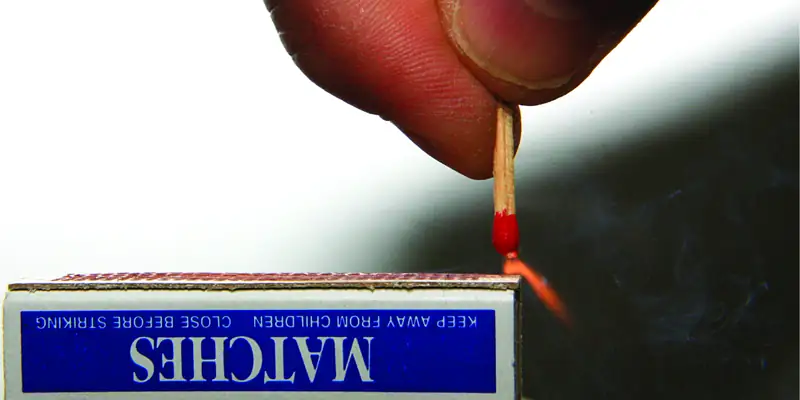
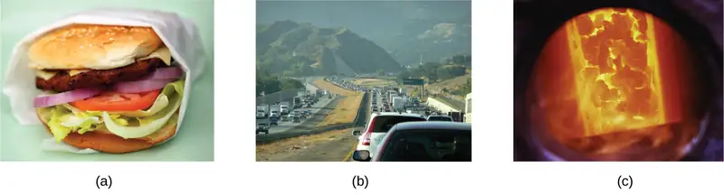
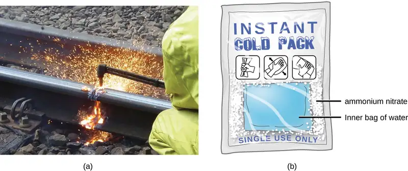
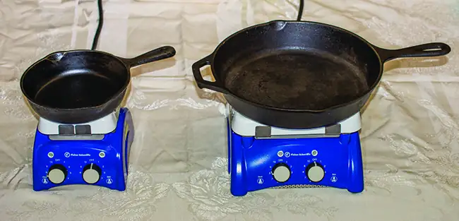
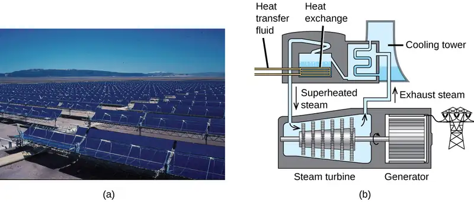
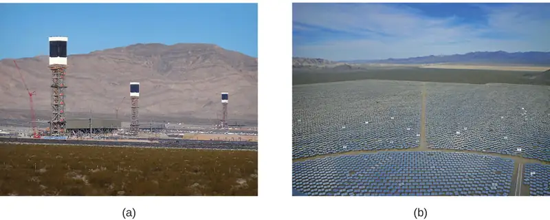
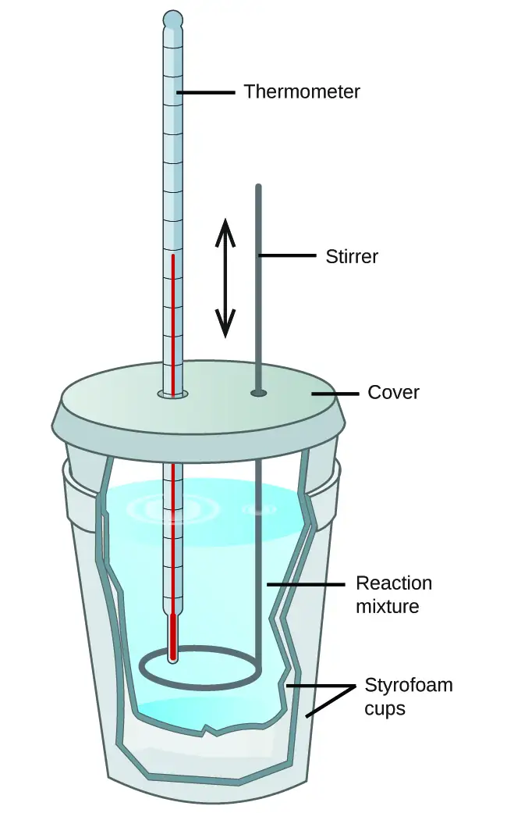
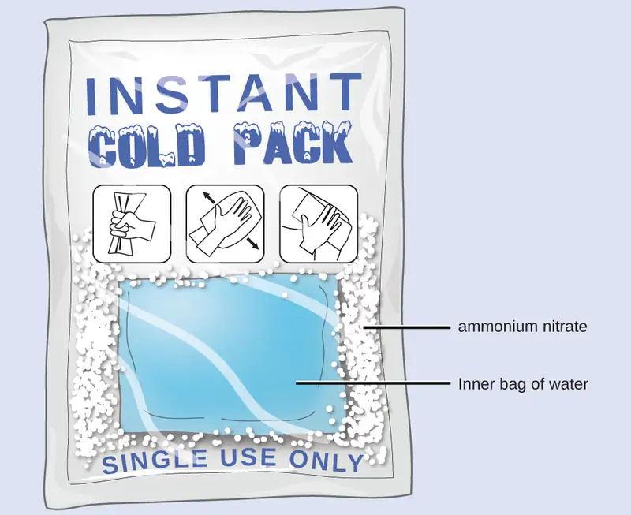
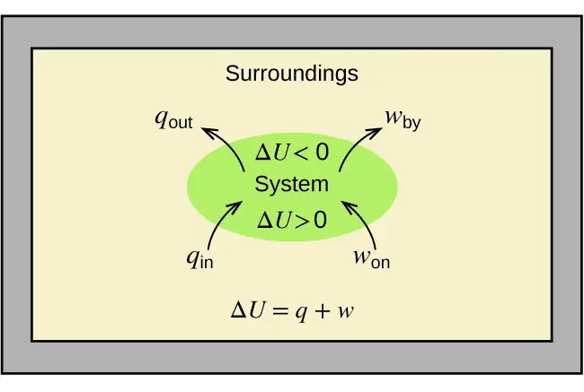
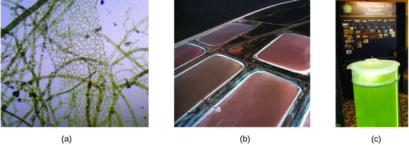

Chapter 5: Thermochemistry¶
Introduction¶
Learning Objectives
- Energy Basics
- Calorimetry
- Enthalpy

Chemical reactions, such as those that occur when you light a match, involve changes in energy as well as matter. Societies at all levels of development could not function without the energy released by chemical reactions. In 2012, about 85% of US energy consumption came from the combustion of petroleum products, coal, wood, and garbage. We use this energy to produce electricity (38%); to transport food, raw materials, manufactured goods, and people (27%); for industrial production (21%); and to heat and power our homes and businesses (10%).1 While these combustion reactions help us meet our essential energy needs, they are also recognized by the majority of the scientific community as a major contributor to global climate change.
Useful forms of energy are also available from a variety of chemical reactions other than combustion. For example, the energy produced by the batteries in a cell phone, car, or flashlight results from chemical reactions. This chapter introduces many of the basic ideas necessary to explore the relationships between chemical changes and energy, with a focus on thermal energy.
5.1 Energy Basics¶
Learning Objectives
By the end of this section, you will be able to:
- Define energy, distinguish types of energy, and describe the nature of energy changes that accompany chemical and physical changes
- Distinguish the related properties of heat, thermal energy, and temperature
- Define and distinguish specific heat and heat capacity, and describe the physical implications of both
- Perform calculations involving heat, specific heat, and temperature change
Chemical changes and their accompanying changes in energy are important parts of our everyday world (Figure 5.2). The macronutrients in food (proteins, fats, and carbohydrates) undergo metabolic reactions that provide the energy to keep our bodies functioning. We burn a variety of fuels (gasoline, natural gas, coal) to produce energy for transportation, heating, and the generation of electricity. Industrial chemical reactions use enormous amounts of energy to produce raw materials (such as iron and aluminum). Energy is then used to manufacture those raw materials into useful products, such as cars, skyscrapers, and bridges.

Over 90% of the energy we use comes originally from the sun. Every day, the sun provides the earth with almost 10,000 times the amount of energy necessary to meet all of the world’s energy needs for that day. Our challenge is to find ways to convert and store incoming solar energy so that it can be used in reactions or chemical processes that are both convenient and nonpolluting. Plants and many bacteria capture solar energy through photosynthesis. We release the energy stored in plants when we burn wood or plant products such as ethanol. We also use this energy to fuel our bodies by eating food that comes directly from plants or from animals that got their energy by eating plants. Burning coal and petroleum also releases stored solar energy: These fuels are fossilized plant and animal matter.
This chapter will introduce the basic ideas of an important area of science concerned with the amount of heat absorbed or released during chemical and physical changes—an area called thermochemistry. The concepts introduced in this chapter are widely used in almost all scientific and technical fields. Food scientists use them to determine the energy content of foods. Biologists study the energetics of living organisms, such as the metabolic combustion of sugar into carbon dioxide and water. The oil, gas, and transportation industries, renewable energy providers, and many others endeavor to find better methods to produce energy for our commercial and personal needs. Engineers strive to improve energy efficiency, find better ways to heat and cool our homes, refrigerate our food and drinks, and meet the energy and cooling needs of computers and electronics, among other applications. Understanding thermochemical principles is essential for chemists, physicists, biologists, geologists, every type of engineer, and just about anyone who studies or does any kind of science.
Energy¶
Energy can be defined as the capacity to supply heat or do work. One type of work (w) is the process of causing matter to move against an opposing force. For example, we do work when we inflate a bicycle tire—we move matter (the air in the pump) against the opposing force of the air already in the tire.
Like matter, energy comes in different types. One scheme classifies energy into two types: potential energy, the energy an object has because of its relative position, composition, or condition, and kinetic energy, the energy that an object possesses because of its motion. Water at the top of a waterfall or dam has potential energy because of its position; when it flows downward through generators, it has kinetic energy that can be used to do work and produce electricity in a hydroelectric plant (Figure 5.3). A battery has potential energy because the chemicals within it can produce electricity that can do work.
Energy can be converted from one form into another, but all of the energy present before a change occurs always exists in some form after the change is completed. This observation is expressed in the law of conservation of energy: during a chemical or physical change, energy can be neither created nor destroyed, although it can be changed in form. (This is also one version of the first law of thermodynamics, as you will learn later.)
When one substance is converted into another, there is always an associated conversion of one form of energy into another. Heat is usually released or absorbed, but sometimes the conversion involves light, electrical energy, or some other form of energy. For example, chemical energy (a type of potential energy) is stored in the molecules that compose gasoline. When gasoline is combusted within the cylinders of a car’s engine, the rapidly expanding gaseous products of this chemical reaction generate mechanical energy (a type of kinetic energy) when they move the cylinders’ pistons.
According to the law of conservation of matter (seen in an earlier chapter), there is no detectable change in the total amount of matter during a chemical change. When chemical reactions occur, the energy changes are relatively modest and the mass changes are too small to measure, so the laws of conservation of matter and energy hold well. However, in nuclear reactions, the energy changes are much larger (by factors of a million or so), the mass changes are measurable, and matter-energy conversions are significant. This will be examined in more detail in a later chapter on nuclear chemistry.
Thermal Energy, Temperature, and Heat¶
Thermal energy is kinetic energy associated with the random motion of atoms and molecules. Temperature is a quantitative measure of “hot” or “cold.” When the atoms and molecules in an object are moving or vibrating quickly, they have a higher average kinetic energy (KE), and we say that the object is “hot.” When the atoms and molecules are moving slowly, they have lower average KE, and we say that the object is “cold” (Figure 5.4). Assuming that no chemical reaction or phase change (such as melting or vaporizing) occurs, increasing the amount of thermal energy in a sample of matter will cause its temperature to increase. And, assuming that no chemical reaction or phase change (such as condensation or freezing) occurs, decreasing the amount of thermal energy in a sample of matter will cause its temperature to decrease.

Link to Learning
Click on this interactive simulation to view the effects of temperature on molecular motion.
Most substances expand as their temperature increases and contract as their temperature decreases. This property can be used to measure temperature changes, as shown in Figure 5.5. The operation of many thermometers depends on the expansion and contraction of substances in response to temperature changes.
![A picture labeled a is shown as well as a pair of drawings labeled b. Picture a shows the lower portion of an alcohol thermometer. The thermometer has a printed scale to the left of the tube in the center that reads from negative forty degrees at the bottom to forty degrees at the top. It also has a scale printed to the right of the tube that reads from negative thirty degrees at the bottom to thirty five degrees at the top. On both scales, the volume of the alcohol in the tube reads between nine and ten degrees. The two images labeled b both depict a metal strip coiled into a spiral and composed of brass and steel. The left coil, which is loosely coiled, is labeled along its upper edge with the 30 degrees C and 10 degrees C. The end of the coil is near the 30 degrees C label. The right hand coil is much more tightly wound and the end is near the 10 degree C label.](img/cnx-chem-05-01-thermom.webp)
Link to Learning
The following demonstration allows one to view the effects of heating and cooling a coiled bimetallic strip.
Heat (q) is the transfer of thermal energy between two bodies at different temperatures. Heat flow (a redundant term, but one commonly used) increases the thermal energy of one body and decreases the thermal energy of the other. Suppose we initially have a high temperature (and high thermal energy) substance (H) and a low temperature (and low thermal energy) substance (L). The atoms and molecules in H have a higher average KE than those in L. If we place substance H in contact with substance L, the thermal energy will flow spontaneously from substance H to substance L. The temperature of substance H will decrease, as will the average KE of its molecules; the temperature of substance L will increase, along with the average KE of its molecules. Heat flow will continue until the two substances are at the same temperature (Figure 5.6).
![Three drawings are shown and labeled a, b, and c, respectively. The first drawing labeled a depicts two boxes, with a space in between and the pair is captioned “Different temperatures.” The left hand box is labeled H and holds fourteen well-spaced red spheres with lines drawn around them to indicate rapid motion. The right hand box is labeled L and depicts fourteen blue spheres that are closer together than the red spheres and have smaller lines around them showing less particle motion. The second drawing labeled b depicts two boxes that are touching one another. The left box is labeled H and contains fourteen maroon spheres that are spaced evenly apart. There are tiny lines around each sphere depicting particle movement. The right box is labeled L and holds fourteen purple spheres that are slightly closer together than the maroon spheres. There are also tiny lines around each sphere depicting particle movement. A black arrow points from the left box to the right box and the pair of diagrams is captioned “Contact.” The third drawing labeled c, is labeled “Thermal equilibrium.” There are two boxes shown in contact with one another. Both boxes contain fourteen purple spheres with small lines around them depicting moderate movement. The left box is labeled H and the right box is labeled L.](img/cnx-chem-05-01-heattrans1.webp)
Link to Learning
Click on the PhET simulation to explore energy forms and changes. Visit the Energy Systems tab to create combinations of energy sources, transformation methods, and outputs. Click on Energy Symbols to visualize the transfer of energy.
Matter undergoing chemical reactions and physical changes can release or absorb heat. A change that releases heat is called an exothermic process. For example, the combustion reaction that occurs when using an oxyacetylene torch is an exothermic process—this process also releases energy in the form of light as evidenced by the torch’s flame (Figure 5.7). A reaction or change that absorbs heat is an endothermic process. A cold pack used to treat muscle strains provides an example of an endothermic process. When the substances in the cold pack (water and a salt like ammonium nitrate) are brought together, the resulting process absorbs heat, leading to the sensation of cold.

Historically, energy was measured in units of calories (cal). A calorie is the amount of energy required to raise one gram of water by 1 degree C (1 kelvin). However, this quantity depends on the atmospheric pressure and the starting temperature of the water. The ease of measurement of energy changes in calories has meant that the calorie is still frequently used. The Calorie (with a capital C), or large calorie, commonly used in quantifying food energy content, is a kilocalorie. The SI unit of heat, work, and energy is the joule. A joule (J) is defined as the amount of energy used when a force of 1 newton moves an object 1 meter. It is named in honor of the English physicist James Prescott Joule. One joule is equivalent to 1 kg m2/s2, which is also called 1 newton–meter. A kilojoule (kJ) is 1000 joules. To standardize its definition, 1 calorie has been set to equal 4.184 joules.
We now introduce two concepts useful in describing heat flow and temperature change. The heat capacity (C) of a body of matter is the quantity of heat (q) it absorbs or releases when it experiences a temperature change (ΔT) of 1 degree Celsius (or equivalently, 1 kelvin):
Heat capacity is determined by both the type and amount of substance that absorbs or releases heat. It is therefore an extensive property—its value is proportional to the amount of the substance.
For example, consider the heat capacities of two cast iron frying pans. The heat capacity of the large pan is five times greater than that of the small pan because, although both are made of the same material, the mass of the large pan is five times greater than the mass of the small pan. More mass means more atoms are present in the larger pan, so it takes more energy to make all of those atoms vibrate faster. The heat capacity of the small cast iron frying pan is found by observing that it takes 18,140 J of energy to raise the temperature of the pan by 50.0 °C:
The larger cast iron frying pan, while made of the same substance, requires 90,700 J of energy to raise its temperature by 50.0 °C. The larger pan has a (proportionally) larger heat capacity because the larger amount of material requires a (proportionally) larger amount of energy to yield the same temperature change:
The specific heat capacity (c) of a substance, commonly called its “specific heat,” is the quantity of heat required to raise the temperature of 1 gram of a substance by 1 degree Celsius (or 1 kelvin):
Specific heat capacity depends only on the kind of substance absorbing or releasing heat. It is an intensive property—the type, but not the amount, of the substance is all that matters. For example, the small cast iron frying pan has a mass of 808 g. The specific heat of iron (the material used to make the pan) is therefore:
The large frying pan has a mass of 4040 g. Using the data for this pan, we can also calculate the specific heat of iron:
Although the large pan is more massive than the small pan, since both are made of the same material, they both yield the same value for specific heat (for the material of construction, iron). Note that specific heat is measured in units of energy per temperature per mass and is an intensive property, being derived from a ratio of two extensive properties (heat and mass). The molar heat capacity, also an intensive property, is the heat capacity per mole of a particular substance and has units of J/mol °C (Figure 5.8).

Water has a relatively high specific heat (about 4.2 J/g °C for the liquid and 2.09 J/g °C for the solid); most metals have much lower specific heats (usually less than 1 J/g °C). The specific heat of a substance varies somewhat with temperature. However, this variation is usually small enough that we will treat specific heat as constant over the range of temperatures that will be considered in this chapter. Specific heats of some common substances are listed in Table 5.1.
Table 5.1
| Specific Heats of Common Substances at 25 °C and 1 bar | ||
|---|---|---|
| Substance | Symbol (state) | Specific Heat (J/g °C) |
| helium | He(g) | 5.193 |
| water | H2O(l) | 4.184 |
| ethanol | C2H6O(l) | 2.376 |
| ice | H2O(s) | 2.093 (at −10 °C) |
| water vapor | H2O(g) | 1.864 |
| nitrogen | N2(g) | 1.040 |
| air | 1.007 | |
| oxygen | O2(g) | 0.918 |
| aluminum | Al(s) | 0.897 |
| carbon dioxide | CO2(g) | 0.853 |
| argon | Ar(g) | 0.522 |
| iron | Fe(s) | 0.449 |
| copper | Cu(s) | 0.385 |
| lead | Pb(s) | 0.130 |
| gold | Au(s) | 0.129 |
| silicon | Si(s) | 0.712 |
If we know the mass of a substance and its specific heat, we can determine the amount of heat, q, entering or leaving the substance by measuring the temperature change before and after the heat is gained or lost:
In this equation, c is the specific heat of the substance, m is its mass, and ΔT (which is read “delta T”) is the temperature change, Tfinal − Tinitial. If a substance gains thermal energy, its temperature increases, its final temperature is higher than its initial temperature, Tfinal − Tinitial has a positive value, and the value of q is positive. If a substance loses thermal energy, its temperature decreases, the final temperature is lower than the initial temperature, Tfinal − Tinitial has a negative value, and the value of q is negative.
Example 5.1 Measuring Heat
A flask containing 8.0 \(\times\) 102 g of water is heated, and the temperature of the water increases from 21 °C to 85 °C. How much heat did the water absorb?
Solution
To answer this question, consider these factors:
- the specific heat of the substance being heated (in this case, water)
- the amount of substance being heated (in this case, 8.0 × 102 g)
- the magnitude of the temperature change (in this case, from 21 °C to 85 °C).
The specific heat of water is 4.184 J/g °C, so to heat 1 g of water by 1 °C requires 4.184 J. We note that since 4.184 J is required to heat 1 g of water by 1 °C, we will need 800 times as much to heat 8.0 × 102 g of water by 1 °C. Finally, we observe that since 4.184 J are required to heat 1 g of water by 1 °C, we will need 64 times as much to heat it by 64 °C (that is, from 21 °C to 85 °C).
This can be summarized using the equation:
Because the temperature increased, the water absorbed heat and q is positive.
Check Your Learning
How much heat, in joules, must be added to a 502 g iron skillet to increase its temperature from 25 °C to 250 °C? The specific heat of iron is 0.449 J/g °C.
Answer:
5.07 \(\times\) 104 J
Note that the relationship between heat, specific heat, mass, and temperature change can be used to determine any of these quantities (not just heat) if the other three are known or can be deduced.
Example 5.2 Determining Other Quantities
A piece of unknown metal weighs 348 g. When the metal piece absorbs 6.64 kJ of heat, its temperature increases from 22.4 °C to 43.6 °C. Determine the specific heat of this metal (which might provide a clue to its identity).
Solution
Since mass, heat, and temperature change are known for this metal, we can determine its specific heat using the relationship:
Substituting the known values:
Solving:
Comparing this value with the values in Table 5.1, this value matches the specific heat of aluminum, which suggests that the unknown metal may be aluminum.
Check Your Learning
A piece of unknown metal weighs 217 g. When the metal piece absorbs 1.43 kJ of heat, its temperature increases from 24.5 °C to 39.1 °C. Determine the specific heat of this metal, and predict its identity.
Answer:
c = 0.451 J/g °C; the metal is likely to be iron
Chemistry in Everyday Life: Solar Thermal Energy Power Plants
The sunlight that reaches the earth contains thousands of times more energy than we presently capture. Solar thermal systems provide one possible solution to the problem of converting energy from the sun into energy we can use. Large-scale solar thermal plants have different design specifics, but all concentrate sunlight to heat some substance; the heat “stored” in that substance is then converted into electricity.
The Solana Generating Station in Arizona’s Sonora Desert produces 280 megawatts of electrical power. It uses parabolic mirrors that focus sunlight on pipes filled with a heat transfer fluid (HTF) (Figure 5.9). The HTF then does two things: It turns water into steam, which spins turbines, which in turn produces electricity, and it melts and heats a mixture of salts, which functions as a thermal energy storage system. After the sun goes down, the molten salt mixture can then release enough of its stored heat to produce steam to run the turbines for 6 hours. Molten salts are used because they possess a number of beneficial properties, including high heat capacities and thermal conductivities.

The 377-megawatt Ivanpah Solar Generating System, located in the Mojave Desert in California, is the largest solar thermal power plant in the world (Figure 5.10). Its 170,000 mirrors focus huge amounts of sunlight on three water-filled towers, producing steam at over 538 °C that drives electricity-producing turbines. It produces enough energy to power 140,000 homes. Water is used as the working fluid because of its large heat capacity and heat of vaporization.

5.2 Calorimetry¶
Learning Objectives
By the end of this section, you will be able to:
- Explain the technique of calorimetry
- Calculate and interpret heat and related properties using typical calorimetry data
One technique we can use to measure the amount of heat involved in a chemical or physical process is known as calorimetry. Calorimetry is used to measure amounts of heat transferred to or from a substance. To do so, the heat is exchanged with a calibrated object (calorimeter). The temperature change measured by the calorimeter is used to derive the amount of heat transferred by the process under study. The measurement of heat transfer using this approach requires the definition of a system (the substance or substances undergoing the chemical or physical change) and its surroundings (all other matter, including components of the measurement apparatus, that serve to either provide heat to the system or absorb heat from the system).
A calorimeter is a device used to measure the amount of heat involved in a chemical or physical process. For example, when an exothermic reaction occurs in solution in a calorimeter, the heat produced by the reaction is absorbed by the solution, which increases its temperature. When an endothermic reaction occurs, the heat required is absorbed from the thermal energy of the solution, which decreases its temperature (Figure 5.11). The temperature change, along with the specific heat and mass of the solution, can then be used to calculate the amount of heat involved in either case.
![Two diagrams labeled a and b are shown. Each is made up of two rectangular containers with a thermometer inserted into the top right and extending inside. There is a right facing arrow connecting each box in each diagram. The left container in diagram a depicts a pink and green swirling solution with the terms “Exothermic process” and “System” written in the center with arrows facing away from the terms pointing to “q.” The labels “Solution” and “Surroundings” are written at the bottom of the container. The right container in diagram a has the term “Solution” written at the bottom of the container and a red arrow facing up near the thermometer with the phrase “Temperature increased” next to it. The pink and green swirls are more blended in this container. The left container in diagram b depicts a purple and blue swirling solution with the terms “Endothermic process” and “System” written in the center with arrows facing away from the terms and “Solution” and “Surroundings” written at the bottom. The arrows point away from the letter “q.” The right container in diagram b has the term “Solution” written at the bottom and a red arrow facing down near the thermometer with the phrase “Temperature decreased” next to it. The blue and purple swirls are more blended in this container.](img/cnx-chem-05-02-heatmeas.webp)
Calorimetry measurements are important in understanding the heat transferred in reactions involving everything from microscopic proteins to massive machines. During her time at the National Bureau of Standards, research chemist Reatha Clark King performed calorimetric experiments to understand the precise heats of various fluorine compounds. Her work was important to NASA in their quest for better rocket fuels.
Scientists use well-insulated calorimeters that all but prevent the transfer of heat between the calorimeter and its environment, which effectively limits the “surroundings” to the nonsystem components within the calorimeter (and the calorimeter itself). This enables the accurate determination of the heat involved in chemical processes, the energy content of foods, and so on. General chemistry students often use simple calorimeters constructed from polystyrene cups (Figure 5.12). These easy-to-use “coffee cup” calorimeters allow more heat exchange with the outside environment, and therefore produce less accurate energy values.

Commercial solution calorimeters are also available. Relatively inexpensive calorimeters often consist of two thin-walled cups that are nested in a way that minimizes thermal contact during use, along with an insulated cover, handheld stirrer, and simple thermometer. More expensive calorimeters used for industry and research typically have a well-insulated, fully enclosed reaction vessel, motorized stirring mechanism, and a more accurate temperature sensor (Figure 5.13).
![Two diagrams are shown and labeled a and b. Diagram a depicts a thermometer which passes through a disk-like insulating cover and into a metal cylinder which is labeled “metal inner vessel,” which is in turn nested in a metal cylinder labeled “metal outer vessel.” The inner cylinder rests on an insulating support ring. A stirrer passes through the insulating cover and into the inner cylinder as well. Diagram b shows an inner metal vessel half full of liquid resting on an insulating support ring and nested in a metal outer vessel. A precision temperature probe and motorized stirring rod are placed into the solution in the inner vessel and connected by wires to equipment exterior to the set-up.](img/cnx-chem-05-02-calorim2.webp)
Before discussing the calorimetry of chemical reactions, consider a simpler example that illustrates the core idea behind calorimetry. Suppose we initially have a high-temperature substance, such as a hot piece of metal (M), and a low-temperature substance, such as cool water (W). If we place the metal in the water, heat will flow from M to W. The temperature of M will decrease, and the temperature of W will increase, until the two substances have the same temperature—that is, when they reach thermal equilibrium (Figure 5.14). If this occurs in a calorimeter, ideally all of this heat transfer occurs between the two substances, with no heat gained or lost by either its external environment. Under these ideal circumstances, the net heat change is zero:
This relationship can be rearranged to show that the heat gained by substance M is equal to the heat lost by substance W:
The magnitude of the heat (change) is therefore the same for both substances, and the negative sign merely shows that qsubstance M and qsubstance W are opposite in direction of heat flow (gain or loss) but does not indicate the arithmetic sign of either q value (that is determined by whether the matter in question gains or loses heat, per definition). In the specific situation described, qsubstance M is a negative value and qsubstance W is positive, since heat is transferred from M to W.
![Two diagrams are shown and labeled a and b. Each diagram is composed of a rectangular container with a thermometer inserted inside from the top right corner. Both containers are connected by a right-facing arrow. Both containers are full of water, which is depicted by the letter “W,” and each container has a square in the middle which represents a metal which is labeled with a letter “M.” In diagram a, the metal is drawn in brown and has three arrows facing away from it. Each arrow has the letter “q” at its end. The metal is labeled “system” and the water is labeled “surroundings.” The thermometer in this diagram has a relatively low reading. In diagram b, the metal is depicted in purple and the thermometer has a relatively high reading.](img/cnx-chem-05-02-heattrans2.webp)
Example 5.3 Heat Transfer between Substances at Different Temperatures
A 360.0-g piece of rebar (a steel rod used for reinforcing concrete) is dropped into 425 mL of water at 24.0 °C. The final temperature of the water was measured as 42.7 °C. Calculate the initial temperature of the piece of rebar. Assume the specific heat of steel is approximately the same as that for iron (Table 5.1), and that all heat transfer occurs between the rebar and the water (there is no heat exchange with the surroundings).
Solution
The temperature of the water increases from 24.0 °C to 42.7 °C, so the water absorbs heat. That heat came from the piece of rebar, which initially was at a higher temperature. Assuming that all heat transfer was between the rebar and the water, with no heat “lost” to the outside environment, then heat given off by rebar = −heat taken in by water, or:
Since we know how heat is related to other measurable quantities, we have:
Letting f = final and i = initial, in expanded form, this becomes:
The density of water is 1.0 g/mL, so 425 mL of water = 425 g. Noting that the final temperature of both the rebar and water is 42.7 °C, substituting known values yields:
Solving this gives Ti,rebar= 248 °C, so the initial temperature of the rebar was 248 °C.
Check Your Learning
A 248-g piece of copper is dropped into 390 mL of water at 22.6 °C. The final temperature of the water was measured as 39.9 °C. Calculate the initial temperature of the piece of copper. Assume that all heat transfer occurs between the copper and the water.
Answer:
The initial temperature of the copper was 335.6 °C.
Check Your Learning
A 248-g piece of copper initially at 314 °C is dropped into 390 mL of water initially at 22.6 °C. Assuming that all heat transfer occurs between the copper and the water, calculate the final temperature.
Answer:
The final temperature (reached by both copper and water) is 38.7 °C.
This method can also be used to determine other quantities, such as the specific heat of an unknown metal.
Example 5.4 Identifying a Metal by Measuring Specific Heat
A 59.7 g piece of metal that had been submerged in boiling water was quickly transferred into 60.0 mL of water initially at 22.0 °C. The final temperature is 28.5 °C. Use these data to determine the specific heat of the metal. Use this result to identify the metal.
Solution
Assuming perfect heat transfer, heat given off by metal = −heat taken in by water, or:
In expanded form, this is:
Noting that since the metal was submerged in boiling water, its initial temperature was 100.0 °C; and that for water, 60.0 mL = 60.0 g; we have:
Solving this:
Comparing this with values in Table 5.1, our experimental specific heat is closest to the value for copper (0.39 J/g °C), so we identify the metal as copper.
Check Your Learning
A 92.9-g piece of a silver/gray metal is heated to 178.0 °C, and then quickly transferred into 75.0 mL of water initially at 24.0 °C. After 5 minutes, both the metal and the water have reached the same temperature: 29.7 °C. Determine the specific heat and the identity of the metal. (Note: You should find that the specific heat is close to that of two different metals. Explain how you can confidently determine the identity of the metal).
Answer:
cmetal= 0.13 J/g °C
This specific heat is close to that of either gold or lead. It would be difficult to determine which metal this was based solely on the numerical values. However, the observation that the metal is silver/gray in addition to the value for the specific heat indicates that the metal is lead.
When we use calorimetry to determine the heat involved in a chemical reaction, the same principles we have been discussing apply. The amount of heat absorbed by the calorimeter is often small enough that we can neglect it (though not for highly accurate measurements, as discussed later), and the calorimeter minimizes energy exchange with the outside environment. Because energy is neither created nor destroyed during a chemical reaction, the heat produced or consumed in the reaction (the “system”), qreaction, plus the heat absorbed or lost by the solution (the “surroundings”), qsolution, must add up to zero:
This means that the amount of heat produced or consumed in the reaction equals the amount of heat absorbed or lost by the solution:
This concept lies at the heart of all calorimetry problems and calculations.
Example 5.5 Heat Produced by an Exothermic Reaction
When 50.0 mL of 1.00 M HCl(aq) and 50.0 mL of 1.00 M NaOH(aq), both at 22.0 °C, are added to a coffee cup calorimeter, the temperature of the mixture reaches a maximum of 28.9 °C. What is the approximate amount of heat produced by this reaction?
Solution
To visualize what is going on, imagine that you could combine the two solutions so quickly that no reaction took place while they mixed; then after mixing, the reaction took place. At the instant of mixing, you have 100.0 mL of a mixture of HCl and NaOH at 22.0 °C. The HCl and NaOH then react until the solution temperature reaches 28.9 °C.
The heat given off by the reaction is equal to that taken in by the solution. Therefore:
(It is important to remember that this relationship only holds if the calorimeter does not absorb any heat from the reaction, and there is no heat exchange between the calorimeter and the outside environment.)
Next, we know that the heat absorbed by the solution depends on its specific heat, mass, and temperature change:
To proceed with this calculation, we need to make a few more reasonable assumptions or approximations. Since the solution is aqueous, we can proceed as if it were water in terms of its specific heat and mass values. The density of water is approximately 1.0 g/mL, so 100.0 mL has a mass of about 1.0 \(\times\) 102 g (two significant figures). The specific heat of water is approximately 4.184 J/g °C, so we use that for the specific heat of the solution. Substituting these values gives:
Finally, since we are trying to find the heat of the reaction, we have:
The negative sign indicates that the reaction is exothermic. It produces 2.9 kJ of heat.
Check Your Learning
When 100 mL of 0.200 M NaCl(aq) and 100 mL of 0.200 M AgNO3(aq), both at 21.9 °C, are mixed in a coffee cup calorimeter, the temperature increases to 23.5 °C as solid AgCl forms. How much heat is produced by this precipitation reaction? What assumptions did you make to determine your value?
Answer:
1.34 \(\times\) 10 3 kJ, or 1.34 kJ; assume no heat is absorbed by the calorimeter, no heat is exchanged between the calorimeter and its surroundings, and that the specific heat and density of the solution are the same as those for water
Chemistry in Everyday Life: Thermochemistry of Hand Warmers
When working or playing outdoors on a cold day, you might use a hand warmer to warm your hands (Figure 5.15). A common reusable hand warmer contains a supersaturated solution of NaC2H3O2 (sodium acetate) and a metal disc. Bending the disk creates nucleation sites around which the metastable NaC2H3O2 quickly crystallizes (a later chapter on solutions will investigate saturation and supersaturation in more detail).
The process \(\text{NaC}_{2}\text{H}_{3}\text{O}_{2}(aq)\:\longrightarrow\:\text{NaC}_{2}\text{H}_{3}\text{O}_{2}(s)\) is exothermic, and the heat produced by this process is absorbed by your hands, thereby warming them (at least for a while). If the hand warmer is reheated, the NaC2H3O2 redissolves and can be reused.

Another common hand warmer produces heat when it is ripped open, exposing iron and water in the hand warmer to oxygen in the air. One simplified version of this exothermic reaction is \(2\text{Fe}(s)+\frac{3}{2}\,\text{O}_{2}(g)\:\longrightarrow\:\text{Fe}_{2}\text{O}_{3}(s).\) Salt in the hand warmer catalyzes the reaction, so it produces heat more rapidly; cellulose, vermiculite, and activated carbon help distribute the heat evenly. Other types of hand warmers use lighter fluid (a platinum catalyst helps lighter fluid oxidize exothermically), charcoal (charcoal oxidizes in a special case), or electrical units that produce heat by passing an electrical current from a battery through resistive wires.
Link to Learning
This link shows the precipitation reaction that occurs when the disk in a chemical hand warmer is flexed.
Example 5.6 Heat Flow in an Instant Ice Pack
When solid ammonium nitrate dissolves in water, the solution becomes cold. This is the basis for an “instant ice pack” (Figure 5.16). When 3.21 g of solid NH4NO3 dissolves in 50.0 g of water at 24.9 °C in a calorimeter, the temperature decreases to 20.3 °C.
Calculate the value of q for this reaction and explain the meaning of its arithmetic sign. State any assumptions that you made.

Solution
We assume that the calorimeter prevents heat transfer between the solution and its external environment (including the calorimeter itself), in which case:
with “rxn” and “soln” used as shorthand for “reaction” and “solution,” respectively.
Assuming also that the specific heat of the solution is the same as that for water, we have:
The positive sign for q indicates that the dissolution is an endothermic process.
Check Your Learning
When a 3.00-g sample of KCl was added to 3.00 \(\times\) 102 g of water in a coffee cup calorimeter, the temperature decreased by 1.05 °C. How much heat is involved in the dissolution of the KCl? What assumptions did you make?
Answer:
1.33 kJ; assume that the calorimeter prevents heat transfer between the solution and its external environment (including the calorimeter itself) and that the specific heat of the solution is the same as that for water
If the amount of heat absorbed by a calorimeter is too large to neglect or if we require more accurate results, then we must take into account the heat absorbed both by the solution and by the calorimeter.
The calorimeters described are designed to operate at constant (atmospheric) pressure and are convenient to measure heat flow accompanying processes that occur in solution. A different type of calorimeter that operates at constant volume, colloquially known as a bomb calorimeter, is used to measure the energy produced by reactions that yield large amounts of heat and gaseous products, such as combustion reactions. (The term “bomb” comes from the observation that these reactions can be vigorous enough to resemble explosions that would damage other calorimeters.) This type of calorimeter consists of a robust steel container (the “bomb”) that contains the reactants and is itself submerged in water (Figure 5.17). The sample is placed in the bomb, which is then filled with oxygen at high pressure. A small electrical spark is used to ignite the sample. The energy produced by the reaction is absorbed by the steel bomb and the surrounding water. The temperature increase is measured and, along with the known heat capacity of the calorimeter, is used to calculate the energy produced by the reaction. Bomb calorimeters require calibration to determine the heat capacity of the calorimeter and ensure accurate results. The calibration is accomplished using a reaction with a known q, such as a measured quantity of benzoic acid ignited by a spark from a nickel fuse wire that is weighed before and after the reaction. The temperature change produced by the known reaction is used to determine the heat capacity of the calorimeter. The calibration is generally performed each time before the calorimeter is used to gather research data.
![A picture and a diagram are shown, labeled a and b, respectively. Picture a depicts a bomb calorimeter. It is a cube-shaped machine with a cavity in the top, a metal cylinder that is above the cavity, and a read-out panel attached to the top-right side. Diagram b depicts a cut away figure of a cube with a cylindrical container full of water in the middle of it. Another container, labeled “bomb,” sits inside of a smaller cylinder which holds a sample cup and is nested in the cylindrical container surrounded by the water. A black line extends into the water and is labeled “Precision thermometer.” Two wires labeled “Electrodes” extend away from a cover that sits on top of the interior container. A read-out panel is located at the top right of the cube.](img/cnx-chem-05-02-bombcalor.webp)
Link to Learning
Click on this link to view how a bomb calorimeter is prepared for action.
This site shows calorimetric calculations using sample data.
Example 5.7 Bomb Calorimetry
When 3.12 g of glucose, C6H12O6, is burned in a bomb calorimeter, the temperature of the calorimeter increases from 23.8 °C to 35.6 °C. The calorimeter contains 775 g of water, and the bomb itself has a heat capacity of 893 J/°C. How much heat was produced by the combustion of the glucose sample?
Solution
The combustion produces heat that is primarily absorbed by the water and the bomb. (The amounts of heat absorbed by the reaction products and the unreacted excess oxygen are relatively small and dealing with them is beyond the scope of this text. We will neglect them in our calculations.)
The heat produced by the reaction is absorbed by the water and the bomb:
This reaction released 48.7 kJ of heat when 3.12 g of glucose was burned.
Check Your Learning
When 0.963 g of benzene, C6H6, is burned in a bomb calorimeter, the temperature of the calorimeter increases by 8.39 °C. The bomb has a heat capacity of 784 J/°C and is submerged in 925 mL of water. How much heat was produced by the combustion of the benzene sample?
Answer:
qrx = –39.0 kJ (the reaction produced 39.0 kJ of heat)
Since the first one was constructed in 1899, 35 calorimeters have been built to measure the heat produced by a living person.2 These whole-body calorimeters of various designs are large enough to hold an individual human being. More recently, whole-room calorimeters allow for relatively normal activities to be performed, and these calorimeters generate data that more closely reflect the real world. These calorimeters are used to measure the metabolism of individuals under different environmental conditions, different dietary regimes, and with different health conditions, such as diabetes.
For example Carla Prado's team at University of Alberta undertook whole-body calorimetry to understand the energy expenditures of women who had recently given birth. Studies like this help develop better recommendations and regimens for nutrition, exercise, and general wellbeing during this period of significant physiological change. In humans, metabolism is typically measured in Calories per day. A nutritional calorie (Calorie) is the energy unit used to quantify the amount of energy derived from the metabolism of foods; one Calorie is equal to 1000 calories (1 kcal), the amount of energy needed to heat 1 kg of water by 1 °C.
Chemistry in Everyday Life: Measuring Nutritional Calories
In your day-to-day life, you may be more familiar with energy being given in Calories, or nutritional calories, which are used to quantify the amount of energy in foods. One calorie (cal) = exactly 4.184 joules, and one Calorie (note the capitalization) = 1000 cal, or 1 kcal. (This is approximately the amount of energy needed to heat 1 kg of water by 1 °C.)
The macronutrients in food are proteins, carbohydrates, and fats or oils. Proteins provide about 4 Calories per gram, carbohydrates also provide about 4 Calories per gram, and fats and oils provide about 9 Calories/g. Nutritional labels on food packages show the caloric content of one serving of the food, as well as the breakdown into Calories from each of the three macronutrients (Figure 5.18).
![Two pictures are shown and labeled a and b. Picture a shows a close-up of a bowl of macaroni and cheese. Picture b is a food label that contains highlighted information in a table format. The top of the label reads “Sample label for macaroni and cheese.” Below this are the words “Nutrition facts.” Below this are two lines of highlighted text that read “Serving size one cup (228 g)” and “Servings per container 2.” A label to the left of these lines reads “Start here” and a right-facing arrow is beside these words. Below this are the words “check calories” which lie to the left of the phrases “Amount per serving” which is above the words “Calories 250” and “Calories from fat 210.” The next segment of the label is highlighted and contains five phrases “Total fat 12 g,” “Saturated fat 3 g,” “Trans fat 3 g,” “Cholesterol 30 m g,” and “Sodium 470 m g.” The phrase “Limit these nutrients” lies to the left of these five phrases. The phrase below these is “Total carbohydrates 31 g” and is followed by a highlighted phrase, “Dietary fiber 0 g.” Below this are the phrases “Sugars 5 g” and “Proteins 5 g.” Below this is a highlighted portion containing the phrases “Vitamin A,” “Vitamin C,” “Calcium,” and “Iron.” A label to the left of these terms states “Get enough of these nutrients.” The bottom of the label is labeled “Footnote” and reads “Percent daily values are based on a 2,000 calorie diet. Your daily values may be higher or lower depending on your calorie needs.” Each of the highlighted terms in the table are in line with a percentage value to the right of the table. A note on the outer right of the table states “Quick guide to % DV”, “5% or less is low” and “20% or more is high. The daily value for total fat is 18%, for saturated fat is 15%, for cholesterol is 10%, for sodium is 20%, for total carbohydrates is 10%, for dietary fiber is 0%, for vitamin A is 4%, for vitamin C is 2%, for calcium is 20%, and for iron is 4%.” At the very bottom is a table that indicates calories at 2,000 and 2,500. For total fat the table indicates less than 65 g for 2,000 calories and 80 g from 2,500 calories. For saturated fat the table indicates less than 20 g for 2,000 calories and 25 g for 2,500 calories. For cholesterol the table indicates less than 300 m g for 2,000 calories and 300 m g for 2,500 calories. For sodium the table indicates less than 2,400 m g for 2,000 calories and 2,400 m g for 2,500 calories. For total carbohydrate the table indicates 300 g for 2,000 calories and 375 g for 2,500 calories. For dietary fiber the table indicates 25 g for 2,000 calories and 30 g for 2,500 calories.](img/cnx-chem-05-02-foodlabel.webp)
For the example shown in (b), the total energy per 228-g portion is calculated by:
So, you can use food labels to count your Calories. But where do the values come from? And how accurate are they? The caloric content of foods can be determined by using bomb calorimetry; that is, by burning the food and measuring the energy it contains. A sample of food is weighed, mixed in a blender, freeze-dried, ground into powder, and formed into a pellet. The pellet is burned inside a bomb calorimeter, and the measured temperature change is converted into energy per gram of food.
Today, the caloric content on food labels is derived using a method called the Atwater system that uses the average caloric content of the different chemical constituents of food, protein, carbohydrate, and fats. The average amounts are those given in the equation and are derived from the various results given by bomb calorimetry of whole foods. The carbohydrate amount is discounted a certain amount for the fiber content, which is indigestible carbohydrate. To determine the energy content of a food, the quantities of carbohydrate, protein, and fat are each multiplied by the average Calories per gram for each and the products summed to obtain the total energy.
Link to Learning
Click on this link to access the US Department of Agriculture (USDA) National Nutrient Database, containing nutritional information on over 8000 foods.
5.3 Enthalpy¶
Learning Objectives
By the end of this section, you will be able to:
- State the first law of thermodynamics
- Define enthalpy and explain its classification as a state function
- Write and balance thermochemical equations
- Calculate enthalpy changes for various chemical reactions
- Explain Hess’s law and use it to compute reaction enthalpies
Thermochemistry is a branch of chemical thermodynamics, the science that deals with the relationships between heat, work, and other forms of energy in the context of chemical and physical processes. As we concentrate on thermochemistry in this chapter, we need to consider some widely used concepts of thermodynamics.
Substances act as reservoirs of energy, meaning that energy can be added to them or removed from them. Energy is stored in a substance when the kinetic energy of its atoms or molecules is raised. The greater kinetic energy may be in the form of increased translations (travel or straight-line motions), vibrations, or rotations of the atoms or molecules. When thermal energy is lost, the intensities of these motions decrease and the kinetic energy falls. The total of all possible kinds of energy present in a substance is called the internal energy (U), sometimes symbolized as E.
As a system undergoes a change, its internal energy can change, and energy can be transferred from the system to the surroundings, or from the surroundings to the system. Energy is transferred into a system when it absorbs heat (q) from the surroundings or when the surroundings do work (w) on the system. For example, energy is transferred into room-temperature metal wire if it is immersed in hot water (the wire absorbs heat from the water), or if you rapidly bend the wire back and forth (the wire becomes warmer because of the work done on it). Both processes increase the internal energy of the wire, which is reflected in an increase in the wire’s temperature. Conversely, energy is transferred out of a system when heat is lost from the system, or when the system does work on the surroundings.
The relationship between internal energy, heat, and work can be represented by the equation:
as shown in Figure 5.19. This is one version of the first law of thermodynamics, and it shows that the internal energy of a system changes through heat flow into or out of the system (positive q is heat flow in; negative q is heat flow out) or work done on or by the system. The work, w, is positive if it is done on the system and negative if it is done by the system.

A type of work called expansion work (or pressure-volume work) occurs when a system pushes back the surroundings against a restraining pressure, or when the surroundings compress the system. An example of this occurs during the operation of an internal combustion engine. The reaction of gasoline and oxygen is exothermic. Some of this energy is given off as heat, and some does work pushing the piston in the cylinder. The substances involved in the reaction are the system, and the engine and the rest of the universe are the surroundings. The system loses energy by both heating and doing work on the surroundings, and its internal energy decreases. (The engine is able to keep the car moving because this process is repeated many times per second while the engine is running.) We will consider how to determine the amount of work involved in a chemical or physical change in the chapter on thermodynamics.
Link to Learning
This view of an internal combustion engine illustrates the conversion of energy produced by the exothermic combustion reaction of a fuel such as gasoline into energy of motion.
As discussed, the relationship between internal energy, heat, and work can be represented as ΔU = q + w. Internal energy is an example of a state function (or state variable), whereas heat and work are not state functions. The value of a state function depends only on the state that a system is in, and not on how that state is reached. If a quantity is not a state function, then its value does depend on how the state is reached. An example of a state function is altitude or elevation. If you stand on the summit of Mt. Kilimanjaro, you are at an altitude of 5895 m, and it does not matter whether you hiked there or parachuted there. The distance you traveled to the top of Kilimanjaro, however, is not a state function. You could climb to the summit by a direct route or by a more roundabout, circuitous path (Figure 5.20). The distances traveled would differ (distance is not a state function) but the elevation reached would be the same (altitude is a state function).
Chemists ordinarily use a property known as enthalpy (H) to describe the thermodynamics of chemical and physical processes. Enthalpy is defined as the sum of a system’s internal energy (U) and the mathematical product of its pressure (P) and volume (V):
Enthalpy is also a state function. Enthalpy values for specific substances cannot be measured directly; only enthalpy changes for chemical or physical processes can be determined. For processes that take place at constant pressure (a common condition for many chemical and physical changes), the enthalpy change (ΔH) is:
The mathematical product PΔV represents work (w), namely, expansion or pressure-volume work as noted. By their definitions, the arithmetic signs of ΔV and w will always be opposite:
Substituting this equation and the definition of internal energy into the enthalpy-change equation yields:
where qp is the heat of reaction under conditions of constant pressure.
And so, if a chemical or physical process is carried out at constant pressure with the only work done caused by expansion or contraction, then the heat flow (qp) and enthalpy change (ΔH) for the process are equal.
The heat given off when you operate a Bunsen burner is equal to the enthalpy change of the methane combustion reaction that takes place, since it occurs at the essentially constant pressure of the atmosphere. On the other hand, the heat produced by a reaction measured in a bomb calorimeter (Figure 5.17) is not equal to ΔH because the closed, constant-volume metal container prevents the pressure from remaining constant (it may increase or decrease if the reaction yields increased or decreased amounts of gaseous species). Chemists usually perform experiments under normal atmospheric conditions, at constant external pressure with q = ΔH, which makes enthalpy the most convenient choice for determining heat changes for chemical reactions.
The following conventions apply when using ΔH:
-
A negative value of an enthalpy change, ΔH < 0, indicates an exothermic reaction; a positive value, ΔH > 0, indicates an endothermic reaction. If the direction of a chemical equation is reversed, the arithmetic sign of its ΔH is changed (a process that is endothermic in one direction is exothermic in the opposite direction).
-
Chemists use a thermochemical equation to represent the changes in both matter and energy. In a thermochemical equation, the enthalpy change of a reaction is shown as a ΔH value following the equation for the reaction. This ΔH value indicates the amount of heat associated with the reaction involving the number of moles of reactants and products as shown in the chemical equation. For example, consider this equation:
\[ \text{H}_{2}(g)+\,\frac{1}{2}\text{O}_{2}(g)\:\longrightarrow\:\text{H}_{2}\text{O}(l)\hspace{2.0em}\Delta\text{H}=-286\:\text{kJ} \]This equation indicates that when 1 mole of hydrogen gas and \(\frac{1}{2}\) mole of oxygen gas at some temperature and pressure change to 1 mole of liquid water at the same temperature and pressure, 286 kJ of heat are released to the surroundings. If the coefficients of the chemical equation are multiplied by some factor, the enthalpy change must be multiplied by that same factor (ΔH is an extensive property):
\[ \begin{array}{l} \text{(two-fold increase in amounts)} \\ 2\text{H}_{2}(g)+\text{O}_{2}(g)\:\longrightarrow\:2\text{H}_{2}\text{O}(l)\hspace{3.0em}\Delta\text{H}=2\:\times\:(-286\:\text{kJ})=-572\:\text{kJ} \\ (\text{two-fold decrease in amounts}) \\ \frac{1}{2}\text{H}_{2}(g)+\,\frac{1}{4}\text{O}_{2}(g)\:\longrightarrow\:\frac{1}{2}\text{H}_{2}\text{O}(l)\hspace{3.0em}\Delta\text{H}=\:\frac{1}{2}\:\times\:(-286\:\text{kJ})=-143\:\text{kJ} \end{array} \] -
The enthalpy change of a reaction depends on the physical states of the reactants and products, so these must be shown. For example, when 1 mole of hydrogen gas and \(\frac{1}{2}\) mole of oxygen gas change to 1 mole of liquid water at the same temperature and pressure, 286 kJ of heat are released. If gaseous water forms, only 242 kJ of heat are released.
\[ \text{H}_{2}(g)+\,\frac{1}{2}\,\text{O}_{2}(g)\:\longrightarrow\:\text{H}_{2}\text{O}(g)\hspace{3.0em}\Delta\text{H}=-242\:\text{kJ} \]
Example 5.8 Writing Thermochemical Equations
When 0.0500 mol of HCl(aq) reacts with 0.0500 mol of NaOH(aq) to form 0.0500 mol of NaCl(aq), 2.9 kJ of heat are produced. Write a balanced thermochemical equation for the reaction of one mole of HCl.
Solution
For the reaction of 0.0500 mol acid (HCl), q = −2.9 kJ. The reactants are provided in stoichiometric amounts (same molar ratio as in the balanced equation), and so the amount of acid may be used to calculate a molar enthalpy change. Since ΔH is an extensive property, it is proportional to the amount of acid neutralized:
The thermochemical equation is then
Check Your Learning
When 1.34 g Zn(s) reacts with 60.0 mL of 0.750 M HCl(aq), 3.14 kJ of heat are produced. Determine the enthalpy change per mole of zinc reacting for the reaction:
Answer:
ΔH = −153 kJ
Be sure to take both stoichiometry and limiting reactants into account when determining the ΔH for a chemical reaction.
Example 5.9 Writing Thermochemical Equations
A gummy bear contains 2.67 g sucrose, C12H22O11. When it reacts with 7.19 g potassium chlorate, KClO3, 43.7 kJ of heat are produced. Write a thermochemical equation for the reaction of one mole of sucrose:
Solution
Unlike the previous example exercise, this one does not involve the reaction of stoichiometric amounts of reactants, and so the limiting reactant must be identified (it limits the yield of the reaction and the amount of thermal energy produced or consumed).
The provided amounts of the two reactants are
The provided molar ratio of perchlorate-to-sucrose is then
The balanced equation indicates 8 mol KClO3 are required for reaction with 1 mol C12H22O11. Since the provided amount of KClO3 is less than the stoichiometric amount, it is the limiting reactant and may be used to compute the enthalpy change:
Because the equation, as written, represents the reaction of 8 mol KClO3, the enthalpy change is
The enthalpy change for this reaction is −5960 kJ, and the thermochemical equation is:
Check Your Learning
When 1.42 g of iron reacts with 1.80 g of chlorine, 3.22 g of FeCl2(s) and 8.60 kJ of heat is produced. What is the enthalpy change for the reaction when 1 mole of FeCl2(s) is produced?
Answer:
ΔH = −338 kJ
Enthalpy changes are typically tabulated for reactions in which both the reactants and products are at the same conditions. A standard state is a commonly accepted set of conditions used as a reference point for the determination of properties under other different conditions. For chemists, the IUPAC standard state refers to materials under a pressure of 1 bar and solutions at 1 M, and does not specify a temperature. Many thermochemical tables list values with a standard state of 1 atm. Because the ΔH of a reaction changes very little with such small changes in pressure (1 bar = 0.987 atm), ΔH values (except for the most precisely measured values) are essentially the same under both sets of standard conditions. We will include a superscripted “o” in the enthalpy change symbol to designate standard state. Since the usual (but not technically standard) temperature is 298.15 K, this temperature will be assumed unless some other temperature is specified. Thus, the symbol \((\Delta H{}^{\circ})\) is used to indicate an enthalpy change for a process occurring under these conditions. (The symbol ΔH is used to indicate an enthalpy change for a reaction occurring under nonstandard conditions.)
The enthalpy changes for many types of chemical and physical processes are available in the reference literature, including those for combustion reactions, phase transitions, and formation reactions. As we discuss these quantities, it is important to pay attention to the extensive nature of enthalpy and enthalpy changes. Since the enthalpy change for a given reaction is proportional to the amounts of substances involved, it may be reported on that basis (i.e., as the ΔH for specific amounts of reactants). However, we often find it more useful to divide one extensive property (ΔH) by another (amount of substance), and report a per-amount intensive value of ΔH, often “normalized” to a per-mole basis. (Note that this is similar to determining the intensive property specific heat from the extensive property heat capacity, as seen previously.)
Standard Enthalpy of Combustion¶
Standard enthalpy of combustion \((\Delta H_{C}^{{}^{\circ}})\) is the enthalpy change when 1 mole of a substance burns (combines vigorously with oxygen) under standard state conditions; it is sometimes called “heat of combustion.” For example, the enthalpy of combustion of ethanol, −1366.8 kJ/mol, is the amount of heat produced when one mole of ethanol undergoes complete combustion at 25 °C and 1 atmosphere pressure, yielding products also at 25 °C and 1 atm.
Enthalpies of combustion for many substances have been measured; a few of these are listed in Table 5.2. Many readily available substances with large enthalpies of combustion are used as fuels, including hydrogen, carbon (as coal or charcoal), and hydrocarbons (compounds containing only hydrogen and carbon), such as methane, propane, and the major components of gasoline.
Table 5.2
| Standard Molar Enthalpies of Combustion | ||
|---|---|---|
| Substance | Combustion Reaction | Enthalpy of Combustion, \(\Delta H_{c}^{{}^{\circ}}\) \((\frac{\text{kJ}}{\text{mol}}\:\text{at}\:25\:\text{°C})\) |
| carbon | \(\text{C}(s)+\text{O}_{2}(g)\:\longrightarrow\:\text{CO}_{2}(g)\) | −393.5 |
| hydrogen | \(\text{H}_{2}(g)+\,\frac{1}{2}\,\text{O}_{2}(g)\:\longrightarrow\:\text{H}_{2}\text{O}(l)\) | −285.8 |
| magnesium | \(\text{Mg}(s)+\,\frac{1}{2}\,\text{O}_{2}(g)\:\longrightarrow\:\text{MgO}(s)\) | −601.6 |
| sulfur | \(\text{S}(s)+\text{O}_{2}(g)\:\longrightarrow\:\text{SO}_{2}(g)\) | −296.8 |
| carbon monoxide | \(\text{CO}(g)+\,\frac{1}{2}\,\text{O}_{2}(g)\:\longrightarrow\:\text{CO}_{2}(g)\) | −283.0 |
| methane | \(\text{CH}_{4}(g)+2\text{O}_{2}(g)\:\longrightarrow\:\text{CO}_{2}(g)+2\text{H}_{2}\text{O}(l)\) | −890.8 |
| acetylene | \(\text{C}_{2}\text{H}_{2}(g)+\,\frac{5}{2}\,\text{O}_{2}(g)\:\longrightarrow\:2\text{CO}_{2}(g)+\text{H}_{2}\text{O}(l)\) | −1301.1 |
| ethanol | \(\text{C}_{2}\text{H}_{5}\text{OH}(l)+3\text{O}_{2}(g)\:\longrightarrow\:\text{2CO}_{2}(g)+3\text{H}_{2}\text{O}(l)\) | −1366.8 |
| methanol | \(\text{CH}_{3}\text{OH}(l)+\,\frac{3}{2}\,\text{O}_{2}(g)\:\longrightarrow\:\text{CO}_{2}(g)+2\text{H}_{2}\text{O}(l)\) | −726.1 |
| isooctane | \(\text{C}_{8}\text{H}_{18}(l)+\,\frac{25}{2}\,\text{O}_{2}(g)\:\longrightarrow\:8\text{CO}_{2}(g)+9\text{H}_{2}\text{O}(l)\) | –5465.5 |
Example 5.10 Using Enthalpy of Combustion
As Figure 5.21 suggests, the combustion of gasoline is a highly exothermic process. Let us determine the approximate amount of heat produced by burning 1.00 L of gasoline, assuming the enthalpy of combustion of gasoline is the same as that of isooctane, a common component of gasoline. The density of isooctane is 0.692 g/mL.
Solution
Starting with a known amount (1.00 L of isooctane), we can perform conversions between units until we arrive at the desired amount of heat or energy. The enthalpy of combustion of isooctane provides one of the necessary conversions. Table 5.2 gives this value as −5460 kJ per 1 mole of isooctane (C8H18).
Using these data,
The combustion of 1.00 L of isooctane produces 33,100 kJ of heat. (This amount of energy is enough to melt 99.2 kg, or about 218 lbs, of ice.)
Note: If you do this calculation one step at a time, you would find:
Check Your Learning
How much heat is produced by the combustion of 125 g of acetylene?
Answer:
6.25 \(\times\) 103 kJ
Chemistry in Everyday Life: Emerging Algae-Based Energy Technologies (Biofuels)
As reserves of fossil fuels diminish and become more costly to extract, the search is ongoing for replacement fuel sources for the future. Among the most promising biofuels are those derived from algae (Figure 5.22). The species of algae used are nontoxic, biodegradable, and among the world’s fastest growing organisms. About 50% of algal weight is oil, which can be readily converted into fuel such as biodiesel. Algae can yield 26,000 gallons of biofuel per hectare—much more energy per acre than other crops. Some strains of algae can flourish in brackish water that is not usable for growing other crops. Algae can produce biodiesel, biogasoline, ethanol, butanol, methane, and even jet fuel.

According to the US Department of Energy, only 39,000 square kilometers (about 0.4% of the land mass of the US or less than \(\frac{1}{7}\) of the area used to grow corn) can produce enough algal fuel to replace all the petroleum-based fuel used in the US. The cost of algal fuels is becoming more competitive—for instance, the US Air Force is producing jet fuel from algae at a total cost of under $5 per gallon.3 The process used to produce algal fuel is as follows: grow the algae (which use sunlight as their energy source and CO2 as a raw material); harvest the algae; extract the fuel compounds (or precursor compounds); process as necessary (e.g., perform a transesterification reaction to make biodiesel); purify; and distribute (Figure 5.23).

Link to Learning
Click here to learn more about the process of creating algae biofuel.
Standard Enthalpy of Formation¶
A standard enthalpy of formation \(\Delta H_{\text{f}}^{{}^{\circ}}\) is an enthalpy change for a reaction in which exactly 1 mole of a pure substance is formed from free elements in their most stable states under standard state conditions. These values are especially useful for computing or predicting enthalpy changes for chemical reactions that are impractical or dangerous to carry out, or for processes for which it is difficult to make measurements. If we have values for the appropriate standard enthalpies of formation, we can determine the enthalpy change for any reaction, which we will practice in the next section on Hess’s law.
The standard enthalpy of formation of CO2(g) is −393.5 kJ/mol. This is the enthalpy change for the exothermic reaction:
starting with the reactants at a pressure of 1 atm and 25 °C (with the carbon present as graphite, the most stable form of carbon under these conditions) and ending with one mole of CO2, also at 1 atm and 25 °C. For nitrogen dioxide, NO2(g), \(\Delta H_{\text{f}}^{{}^{\circ}}\) is 33.2 kJ/mol. This is the enthalpy change for the reaction:
A reaction equation with \(\frac{1}{2}\) mole of N2 and 1 mole of O2 is correct in this case because the standard enthalpy of formation always refers to 1 mole of product, NO2(g).
You will find a table of standard enthalpies of formation of many common substances in Appendix G. These values indicate that formation reactions range from highly exothermic (such as −2984 kJ/mol for the formation of P4O10) to strongly endothermic (such as +226.7 kJ/mol for the formation of acetylene, C2H2). By definition, the standard enthalpy of formation of an element in its most stable form is equal to zero under standard conditions, which is 1 atm for gases and 1 M for solutions.
Example 5.11 Evaluating an Enthalpy of Formation
Ozone, O3(g), forms from oxygen, O2(g), by an endothermic process. Ultraviolet radiation is the source of the energy that drives this reaction in the upper atmosphere. Assuming that both the reactants and products of the reaction are in their standard states, determine the standard enthalpy of formation, \(\Delta H_{\text{f}}^{{}^{\circ}}\) of ozone from the following information:
Solution
\(\Delta H_{\text{f}}^{{}^{\circ}}\) is the enthalpy change for the formation of one mole of a substance in its standard state from the elements in their standard states. Thus, \(\Delta H_{\text{f}}^{{}^{\circ}}\) for O3(g) is the enthalpy change for the reaction:
For the formation of 2 mol of O3(g), \(\Delta H{}^{\circ}=\text{+286 kJ.}\) This ratio, \(\left( \frac{286\:\text{kJ}}{2\:\text{mol}\:\text{O}_{3}} \right),\) can be used as a conversion factor to find the heat produced when 1 mole of O3(g) is formed, which is the enthalpy of formation for O3(g):
Therefore, \(\Delta H_{\text{f}}^{{}^{\circ}}[\text{O}_{3}(g)]=\text{+143 kJ/mol}.\)
Check Your Learning
Hydrogen gas, H2, reacts explosively with gaseous chlorine, Cl2, to form hydrogen chloride, HCl(g). What is the enthalpy change for the reaction of 1 mole of H2(g) with 1 mole of Cl2(g) if both the reactants and products are at standard state conditions? The standard enthalpy of formation of HCl(g) is −92.3 kJ/mol.
Answer:
For the reaction \(\text{H}_{2}(g)+\text{Cl}_{2}(g)\:\longrightarrow\:2\text{HCl}(g)\hspace{3.0em}\Delta H{}^{\circ}=-184.6\:\text{kJ}\)
Example 5.12 Writing Reaction Equations for \(\Delta H_{\text{f}}^{{}^{\circ}}\)
Write the heat of formation reaction equations for:
(a) C2H5OH(l)
(b) Ca3(PO4)2(s)
Solution
Remembering that \(\Delta H_{\text{f}}^{{}^{\circ}}\) reaction equations are for forming 1 mole of the compound from its constituent elements under standard conditions, we have:
(a) \(2\text{C}(s,\:\text{graphite})+3\text{H}_{2}(g)+\,\frac{1}{2}\text{O}_{2}(g)\:\longrightarrow\:\text{C}_{2}\text{H}_{5}\text{OH}(l)\)
(b) \(3\text{Ca}(s)+\,\frac{1}{2}\text{P}_{4}(s)+4\text{O}_{2}(g)\:\longrightarrow\:\text{Ca}_{3}(\text{PO}_{4}{)}_{2}(s)\)
Note: The standard state of carbon is graphite, and phosphorus exists as P4.
Check Your Learning
Write the heat of formation reaction equations for:
(a) C2H5OC2H5(l)
(b) Na2CO3(s)
Answer:
(a) \(4\text{C}(s,\:\text{graphite})+5\text{H}_{2}(g)+\,\frac{1}{2}\text{O}_{2}(g)\:\longrightarrow\:\text{C}_{2}\text{H}_{5}\text{OC}_{2}\text{H}_{5}(l);\) (b) \(2\text{Na}(s)+\text{C}(s,\:\text{graphite})+\,\frac{3}{2}\text{O}_{2}(g)\:\longrightarrow\:\text{Na}_{2}\text{CO}_{3}(s)\)
Hess’s Law¶
There are two ways to determine the amount of heat involved in a chemical change: measure it experimentally, or calculate it from other experimentally determined enthalpy changes. Some reactions are difficult, if not impossible, to investigate and make accurate measurements for experimentally. And even when a reaction is not hard to perform or measure, it is convenient to be able to determine the heat involved in a reaction without having to perform an experiment.
This type of calculation usually involves the use of Hess’s law, which states: If a process can be written as the sum of several stepwise processes, the enthalpy change of the total process equals the sum of the enthalpy changes of the various steps. Hess’s law is valid because enthalpy is a state function: Enthalpy changes depend only on where a chemical process starts and ends, but not on the path it takes from start to finish. For example, we can think of the reaction of carbon with oxygen to form carbon dioxide as occurring either directly or by a two-step process. The direct process is written:
In the two-step process, first carbon monoxide is formed:
Then, carbon monoxide reacts further to form carbon dioxide:
The equation describing the overall reaction is the sum of these two chemical changes:
Because the CO produced in Step 1 is consumed in Step 2, the net change is:
According to Hess’s law, the enthalpy change of the reaction will equal the sum of the enthalpy changes of the steps.
The result is shown in Figure 5.24. We see that ΔH of the overall reaction is the same whether it occurs in one step or two. This finding (overall ΔH for the reaction = sum of ΔH values for reaction “steps” in the overall reaction) is true in general for chemical and physical processes.
![A diagram is shown. A long arrow faces upward on the left with the phrase “H increasing.” A horizontal line at the bottom of the diagram is shown with the formula “C O subscript 2 (g)” below it. A horizontal line at the top of the diagram has the formulas “C (s) + O subscript 2 (g)” above it. The top and bottom lines are connected by a downward facing arrow with the value “Δ H = –394 k J” written beside it. Below and to the right of the top horizontal line is a second horizontal line with the equations “C O (g) + one half O subscript 2 (g)” above it. This line and the bottom line are connected by a downward facing arrow with the value “Δ H = –283 k J” written beside it. The same line and the top line are connected by a downward facing arrow with the value “Δ H = –111 k J” written beside it. There are three brackets to the right of the diagram. The first bracket runs from the top horizontal line to the second horizontal line. It is labeled, “Enthalpy of reactants.” The second bracket runs from the second horizontal line to the bottom horizontal line. It is labeled, “Enthalpy of products.” Both of these brackets are included in the third bracket which runs from the top to the bottom of the diagram. It is labeled, “Enthalpy change of exothermic reaction in 1 or 2 steps.”](img/cnx-chem-05-03-hessco2.webp)
Before we further practice using Hess’s law, let us recall two important features of ΔH.
-
ΔH is directly proportional to the quantities of reactants or products. For example, the enthalpy change for the reaction forming 1 mole of NO2(g) is +33.2 kJ:
\[ \frac{1}{2}\text{N}_{2}(g)+\text{O}_{2}(g)\:\longrightarrow\:\text{NO}_{2}(g)\hspace{3.0em}\Delta\text{H}=\text{+33.2 kJ} \]When 2 moles of NO2 (twice as much) are formed, the ΔH will be twice as large:
\[ \text{N}_{2}(g)+2\text{O}_{2}(g)\:\longrightarrow\:2\text{NO}_{2}(g)\hspace{3.0em}\Delta\text{H}=\text{+66.4 kJ} \]In general, if we multiply or divide an equation by a number, then the enthalpy change should also be multiplied or divided by the same number.
-
ΔH for a reaction in one direction is equal in magnitude and opposite in sign to ΔH for the reaction in the reverse direction. For example, given that:
\[ \text{H}_{2}(g)+\text{Cl}_{2}(g)\:\longrightarrow\:2\text{HCl}(g)\hspace{3.0em}\Delta\text{H}=-184.6\:\text{kJ} \]Then, for the “reverse” reaction, the enthalpy change is also “reversed”:
\[ 2\text{HCl}(g)\:\longrightarrow\:\text{H}_{2}(g)+\text{Cl}_{2}(g)\hspace{3.0em}\Delta\text{H}=\text{+184.6 kJ} \]
Example 5.13 Stepwise Calculation of \(\Delta H_{\text{f}}^{{}^{\circ}}\) Using Hess’s Law
Determine the enthalpy of formation, \(\Delta H_{\text{f}}^{{}^{\circ}},\) of FeCl3(s) from the enthalpy changes of the following two-step process that occurs under standard state conditions:
Solution
We are trying to find the standard enthalpy of formation of FeCl3(s), which is equal to ΔH° for the reaction:
Looking at the reactions, we see that the reaction for which we want to find ΔH° is the sum of the two reactions with known ΔH values, so we must sum their ΔHs:
The enthalpy of formation, \(\Delta H_{\text{f}}^{{}^{\circ}},\) of FeCl3(s) is −399.5 kJ/mol.
Check Your Learning
Calculate ΔH for the process:
from the following information:
Answer:
66.4 kJ
Here is a less straightforward example that illustrates the thought process involved in solving many Hess’s law problems. It shows how we can find many standard enthalpies of formation (and other values of ΔH) if they are difficult to determine experimentally.
Example 5.14 A More Challenging Problem Using Hess’s Law
Chlorine monofluoride can react with fluorine to form chlorine trifluoride:
(i) \(\text{ClF}(g)+\text{F}_{2}(g)\:\longrightarrow\:\text{ClF}_{3}(g)\hspace{3.0em}\Delta\text{H}{}^{\circ}=?\)
Use the reactions here to determine the ΔH° for reaction (i):
(ii) \(2\text{OF}_{2}(g)\:\longrightarrow\:\text{O}_{2}(g)+2\text{F}_{2}(g)\hspace{3.0em}\Delta H_{(ii)}^{{}^{\circ}}=-49.4\:\text{kJ}\)
(iii) \(2\text{ClF}(g)+\text{O}_{2}(g)\:\longrightarrow\:\text{Cl}_{2}\text{O}(g)+\text{OF}_{2}(g)\hspace{3.0em}\Delta H_{(iii)}^{{}^{\circ}}=\text{+214.0 kJ}\)
(iv) \(\text{ClF}_{3}(g)+\text{O}_{2}(g)\:\longrightarrow\:\frac{1}{2}\text{Cl}_{2}\text{O}(g)+\,\frac{3}{2}\text{OF}_{2}(g)\hspace{3.0em}\Delta H_{(iv)}^{{}^{\circ}}=\text{+236.2 kJ}\)
Solution
Our goal is to manipulate and combine reactions (ii), (iii), and (iv) such that they add up to reaction (i). Going from left to right in (i), we first see that ClF(g) is needed as a reactant. This can be obtained by multiplying reaction (iii) by \(\frac{1}{2},\) which means that the ΔH° change is also multiplied by \(\frac{1}{2}\text{:}\)
Next, we see that F2 is also needed as a reactant. To get this, reverse and halve reaction (ii), which means that the ΔH° changes sign and is halved:
To get ClF3 as a product, reverse (iv), changing the sign of ΔH°:
Now check to make sure that these reactions add up to the reaction we want:
Reactants \(\frac{1}{2}\text{O}_{2}\) and \(\frac{1}{2}\text{O}_{2}\) cancel out product O2; product \(\frac{1}{2}\text{Cl}_{2}\text{O}\) cancels reactant \(\frac{1}{2}\text{Cl}_{2}\text{O;}\) and reactant \(\frac{3}{2}\text{OF}_{2}\) is cancelled by products \(\frac{1}{2}\text{OF}_{2}\) and OF2. This leaves only reactants ClF(g) and F2(g) and product ClF3(g), which are what we want. Since summing these three modified reactions yields the reaction of interest, summing the three modified ΔH° values will give the desired ΔH°:
Check Your Learning
Aluminum chloride can be formed from its elements:
(i) \(2\text{Al}(s)+3\text{Cl}_{2}(g)\:\longrightarrow\:2\text{AlCl}_{3}(s)\hspace{3.0em}\Delta H{}^{\circ}=?\)
Use the reactions here to determine the ΔH° for reaction (i):
(ii) \(\text{HCl}(g)\:\longrightarrow\:\text{HCl}(aq)\hspace{3.0em}\Delta H_{(ii)}^{{}^{\circ}}=-74.8\:\text{kJ}\)
(iii) \(\text{H}_{2}(g)+\text{Cl}_{2}(g)\:\longrightarrow\:2\text{HCl}(g)\hspace{3.0em}\Delta H_{(iii)}^{{}^{\circ}}=-185\:\text{kJ}\)
(iv) \(\text{AlCl}_{3}(aq)\:\longrightarrow\:\text{AlCl}_{3}(s)\hspace{3.0em}\Delta H_{(iv)}^{{}^{\circ}}=+323\:\text{kJ/mol}\)
(v) \(\text{2Al}(s)+6\text{HCl}(aq)\:\longrightarrow\:2\text{AlCl}_{3}(aq)+3\text{H}_{2}(g)\hspace{3.0em}\Delta H_{(v)}^{{}^{\circ}}=-1049\:\text{kJ}\)
Answer:
−1407 kJ
We also can use Hess’s law to determine the enthalpy change of any reaction if the corresponding enthalpies of formation of the reactants and products are available. The stepwise reactions we consider are: (i) decompositions of the reactants into their component elements (for which the enthalpy changes are proportional to the negative of the enthalpies of formation of the reactants), followed by (ii) re-combinations of the elements to give the products (with the enthalpy changes proportional to the enthalpies of formation of the products). The standard enthalpy change of the overall reaction is therefore equal to: (ii) the sum of the standard enthalpies of formation of all the products plus (i) the sum of the negatives of the standard enthalpies of formation of the reactants. This is usually rearranged slightly to be written as follows, with ∑ representing “the sum of” and n standing for the stoichiometric coefficients:
The following example shows in detail why this equation is valid, and how to use it to calculate the enthalpy change for a reaction of interest.
Example 5.15 Using Hess’s Law
What is the standard enthalpy change for the reaction:
Solution: Using the Equation
Use the special form of Hess’s law given previously, and values from Appendix G:
Solution: Supporting Why the General Equation Is Valid
Alternatively, we can write this reaction as the sum of the decompositions of 3NO2(g) and 1H2O(l) into their constituent elements, and the formation of 2HNO3(aq) and 1NO(g) from their constituent elements. Writing out these reactions, and noting their relationships to the \(\Delta H_{\text{f}}^{{}^{\circ}}\) values for these compounds (from Appendix G ), we have:
Summing these reaction equations gives the reaction we are interested in:
Summing their enthalpy changes gives the value we want to determine:
So the standard enthalpy change for this reaction is ΔH° = −138.4 kJ.
Note that this result was obtained by (1) multiplying the \(\Delta H_{\text{f}}^{{}^{\circ}}\) of each product by its stoichiometric coefficient and summing those values, (2) multiplying the \(\Delta H_{\text{f}}^{{}^{\circ}}\) of each reactant by its stoichiometric coefficient and summing those values, and then (3) subtracting the result found in (2) from the result found in (1). This is also the procedure in using the general equation, as shown.
Check Your Learning
Calculate the heat of combustion of 1 mole of ethanol, C2H5OH(l), when H2O(l) and CO2(g) are formed. Use the following enthalpies of formation: C2H5OH(l), −278 kJ/mol; H2O(l), −286 kJ/mol; and CO2(g), −394 kJ/mol.
Answer:
−1368 kJ/mol
Chapter Review¶
Key Terms¶
- bomb calorimeter
- device designed to measure the energy change for processes occurring under conditions of constant volume; commonly used for reactions involving solid and gaseous reactants or products
- calorie (cal)
- unit of heat or other energy; the amount of energy required to raise 1 gram of water by 1 degree Celsius; 1 cal is defined as 4.184 J
- calorimeter
- device used to measure the amount of heat absorbed or released in a chemical or physical process
- calorimetry
- process of measuring the amount of heat involved in a chemical or physical process
- chemical thermodynamics
- area of science that deals with the relationships between heat, work, and all forms of energy associated with chemical and physical processes
- endothermic process
- chemical reaction or physical change that absorbs heat
- energy
- capacity to supply heat or do work
- enthalpy (H)
- sum of a system’s internal energy and the mathematical product of its pressure and volume
- enthalpy change (ΔH)
- heat released or absorbed by a system under constant pressure during a chemical or physical process
- exothermic process
- chemical reaction or physical change that releases heat
- expansion work (pressure-volume work)
- work done as a system expands or contracts against external pressure
- first law of thermodynamics
- internal energy of a system changes due to heat flow in or out of the system or work done on or by the system
- heat (q)
- transfer of thermal energy between two bodies
- heat capacity (C)
- extensive property of a body of matter that represents the quantity of heat required to increase its temperature by 1 degree Celsius (or 1 kelvin)
- Hess’s law
- if a process can be represented as the sum of several steps, the enthalpy change of the process equals the sum of the enthalpy changes of the steps
- hydrocarbon
- compound composed only of hydrogen and carbon; the major component of fossil fuels
- internal energy (U)
- total of all possible kinds of energy present in a substance or substances
- joule (J)
- SI unit of energy; amount of energy used when a force of 1 newton moves an object 1 meter, 1 J = 1 kg m2/s2 and 4.184 J = 1 cal
- kinetic energy
- energy associated with an object's motion, equal to one-half the product of the object's mass and the square of its velocity, \(\frac{1}{2}mv^{2}\) (where m = mass and v = velocity)
- nutritional calorie (Calorie)
- unit used for quantifying energy provided by digestion of foods, defined as 1000 cal or 1 kcal
- potential energy
- energy of a particle or system of particles derived from relative position, composition, or condition
- specific heat capacity (c)
- intensive property of a substance that represents the quantity of heat required to raise the temperature of 1 gram of the substance by 1 degree Celsius (or 1 kelvin)
- standard enthalpy of combustion \(\text{(}\Delta H_{\text{c}}^{{}^{\circ}}\text{)}\)
- heat released when one mole of a compound undergoes complete combustion under standard conditions
- standard enthalpy of formation \(\text{(}\Delta H_{\text{f}}^{{}^{\circ}}\text{)}\)
- enthalpy change of a chemical reaction in which 1 mole of a pure substance is formed from its elements in their most stable states under standard state conditions
- standard state
- set of physical conditions as accepted as common reference conditions for reporting thermodynamic properties; 1 bar of pressure, and solutions at 1 molar concentrations, usually at a temperature of 298.15 K
- state function
- property depending only on the state of a system, and not the path taken to reach that state
- surroundings
- all matter other than the system being studied
- system
- portion of matter undergoing a chemical or physical change being studied
- temperature
- intensive property of matter that is a quantitative measure of “hotness” and “coldness”
- thermal energy
- kinetic energy associated with the random motion of atoms and molecules
- thermochemistry
- study of measuring the amount of heat absorbed or released during a chemical reaction or a physical change
- work (w)
- energy transfer due to changes in external, macroscopic variables such as pressure and volume; or causing matter to move against an opposing force
Key Equations¶
5.1 Energy Basics¶
| \(q=c\:\times\:m\:\times\:\Delta\text{T}=c\:\times\:m\:\times\:(T_{\text{final}}-T_{\text{initial}})\) |
5.3 Enthalpy¶
| \(\Delta U=q+w\) |
| \(\Delta H_{\text{reaction}}^{{}^{\circ}}=\displaystyle \sum n\:\times\:\Delta H_{\text{f}}^{{}^{\circ}}\text{(products)}-\displaystyle \sum n\:\times\:\Delta H_{\text{f}}^{{}^{\circ}}(\text{reactants})\) |
Key Concepts and Summary¶
5.1 Energy Basics¶
Energy is the capacity to supply heat or do work (applying a force to move matter). Kinetic energy (KE) is the energy of motion; potential energy is energy due to relative position, composition, or condition. When energy is converted from one form into another, energy is neither created nor destroyed (law of conservation of energy or first law of thermodynamics).
The thermal energy of matter is due to the kinetic energies of its constituent atoms or molecules. Temperature is an intensive property of matter reflecting hotness or coldness that increases as the average kinetic energy increases. Heat is the transfer of thermal energy between objects at different temperatures. Chemical and physical processes can absorb heat (endothermic) or release heat (exothermic). The SI unit of energy, heat, and work is the joule (J).
Specific heat and heat capacity are measures of the energy needed to change the temperature of a substance or object. The amount of heat absorbed or released by a substance depends directly on the type of substance, its mass, and the temperature change it undergoes.
5.2 Calorimetry¶
Calorimetry is used to measure the amount of thermal energy transferred in a chemical or physical process. This requires careful measurement of the temperature change that occurs during the process and the masses of the system and surroundings. These measured quantities are then used to compute the amount of heat produced or consumed in the process using known mathematical relations.
Calorimeters are designed to minimize energy exchange between their contents and the external environment. They range from simple coffee cup calorimeters used by introductory chemistry students to sophisticated bomb calorimeters used to determine the energy content of food.
5.3 Enthalpy¶
If a chemical change is carried out at constant pressure and the only work done is caused by expansion or contraction, q for the change is called the enthalpy change with the symbol ΔH, or \(\Delta H{}^{\circ}\) for reactions occurring under standard state conditions at 298 K. The value of ΔH for a reaction in one direction is equal in magnitude, but opposite in sign, to ΔH for the reaction in the opposite direction, and ΔH is directly proportional to the quantity of reactants and products. The standard enthalpy of formation, \(\Delta H_{\text{f}}^{{}^{\circ}},\) is the enthalpy change accompanying the formation of 1 mole of a substance from the elements in their most stable states at 1 bar and 298.15 K. If the enthalpies of formation are available for the reactants and products of a reaction, the enthalpy change can be calculated using Hess’s law: If a process can be written as the sum of several stepwise processes, the enthalpy change of the total process equals the sum of the enthalpy changes of the various steps.
Exercises¶
5.1 Energy Basics¶
1. A burning match and a bonfire may have the same temperature, yet you would not sit around a burning match on a fall evening to stay warm. Why not?
Answer
The temperature of 1 gram of burning wood is approximately the same for both a match and a bonfire. This is an intensive property and depends on the material (wood). However, the overall amount of produced heat depends on the amount of material; this is an extensive property. The amount of wood in a bonfire is much greater than that in a match; the total amount of produced heat is also much greater, which is why we can sit around a bonfire to stay warm, but a match would not provide enough heat to keep us from getting cold.
2. Prepare a table identifying several energy transitions that take place during the typical operation of an automobile.
3. Explain the difference between heat capacity and specific heat of a substance.
Answer
Heat capacity refers to the heat required to raise the temperature of the mass of the substance 1 degree; specific heat refers to the heat required to raise the temperature of 1 gram of the substance 1 degree. Thus, heat capacity is an extensive property, and specific heat is an intensive one.
4. Calculate the heat capacity, in joules and in calories per degree, of the following:
(a) 28.4 g of water
(b) 1.00 oz of lead
5. Calculate the heat capacity, in joules and in calories per degree, of the following:
(a) 45.8 g of nitrogen gas
(b) 1.00 pound of aluminum metal
Answer
(a) 47.6 J/°C; 11.38 cal °C−1; (b) 407 J/°C; 97.3 cal °C−1
6. How much heat, in joules and in calories, must be added to a 75.0–g iron block with a specific heat of 0.449 J/g °C to increase its temperature from 25 °C to its melting temperature of 1535 °C?
7. How much heat, in joules and in calories, is required to heat a 28.4-g (1-oz) ice cube from −23.0 °C to −1.0 °C?
Answer
1310 J; 313 cal
8. How much would the temperature of 275 g of water increase if 36.5 kJ of heat were added?
9. If 14.5 kJ of heat were added to 485 g of liquid water, how much would its temperature increase?
Answer
7.15 °C
10. A piece of unknown substance weighs 44.7 g and requires 2110 J to increase its temperature from 23.2 °C to 89.6 °C.
(a) What is the specific heat of the substance?
(b) If it is one of the substances found in Table 5.1, what is its likely identity?
11. A piece of unknown solid substance weighs 437.2 g, and requires 8460 J to increase its temperature from 19.3 °C to 68.9 °C.
(a) What is the specific heat of the substance?
(b) If it is one of the substances found in Table 5.1, what is its likely identity?
Answer
(a) 0.390 J/g °C; (b) Copper is a likely candidate.
12. An aluminum kettle weighs 1.05 kg.
(a) What is the heat capacity of the kettle?
(b) How much heat is required to increase the temperature of this kettle from 23.0 °C to 99.0 °C?
(c) How much heat is required to heat this kettle from 23.0 °C to 99.0 °C if it contains 1.25 L of water (density of 0.997 g/mL and a specific heat of 4.184 J/g °C)?
13. Most people find waterbeds uncomfortable unless the water temperature is maintained at about 85 °F. Unless it is heated, a waterbed that contains 892 L of water cools from 85 °F to 72 °F in 24 hours. Estimate the amount of electrical energy required over 24 hours, in kWh, to keep the bed from cooling. Note that 1 kilowatt-hour (kWh) = 3.6 \(\times\) 106 J, and assume that the density of water is 1.0 g/mL (independent of temperature). What other assumptions did you make? How did they affect your calculated result (i.e., were they likely to yield “positive” or “negative” errors)?
Answer
We assume that the density of water is 1.0 g/cm3(1 g/mL) and that it takes as much energy to keep the water at 85 °F as to heat it from 72 °F to 85 °F. We also assume that only the water is going to be heated. Energy required = 7.47 kWh
5.2 Calorimetry¶
14. A 500-mL bottle of water at room temperature and a 2-L bottle of water at the same temperature were placed in a refrigerator. After 30 minutes, the 500-mL bottle of water had cooled to the temperature of the refrigerator. An hour later, the 2-L of water had cooled to the same temperature. When asked which sample of water lost the most heat, one student replied that both bottles lost the same amount of heat because they started at the same temperature and finished at the same temperature. A second student thought that the 2-L bottle of water lost more heat because there was more water. A third student believed that the 500-mL bottle of water lost more heat because it cooled more quickly. A fourth student thought that it was not possible to tell because we do not know the initial temperature and the final temperature of the water. Indicate which of these answers is correct and describe the error in each of the other answers.
15. Would the amount of heat measured for the reaction in Example 5.5 be greater, lesser, or remain the same if we used a calorimeter that was a poorer insulator than a coffee cup calorimeter? Explain your answer.
Answer
lesser; more heat would be lost to the coffee cup and the environment and so ΔT for the water would be lesser and the calculated q would be lesser
16. Would the amount of heat absorbed by the dissolution in Example 5.6 appear greater, lesser, or remain the same if the experimenter used a calorimeter that was a poorer insulator than a coffee cup calorimeter? Explain your answer.
17. Would the amount of heat absorbed by the dissolution in Example 5.6 appear greater, lesser, or remain the same if the heat capacity of the calorimeter were taken into account? Explain your answer.
Answer
greater, since taking the calorimeter’s heat capacity into account will compensate for the thermal energy transferred to the solution from the calorimeter; this approach includes the calorimeter itself, along with the solution, as “surroundings”: qrxn = −(qsolution + qcalorimeter); since both qsolution and qcalorimeter are negative, including the latter term (qrxn) will yield a greater value for the heat of the dissolution
18. How many milliliters of water at 23 °C with a density of 1.00 g/mL must be mixed with 180 mL (about 6 oz) of coffee at 95 °C so that the resulting combination will have a temperature of 60 °C? Assume that coffee and water have the same density and the same specific heat.
19. How much will the temperature of a cup (180 g) of coffee at 95 °C be reduced when a 45 g silver spoon (specific heat 0.24 J/g °C) at 25 °C is placed in the coffee and the two are allowed to reach the same temperature? Assume that the coffee has the same density and specific heat as water.
Answer
The temperature of the coffee will drop 1 degree.
20. A 45-g aluminum spoon (specific heat 0.88 J/g °C) at 24 °C is placed in 180 mL (180 g) of coffee at 85 °C and the temperature of the two become equal.
(a) What is the final temperature when the two become equal? Assume that coffee has the same specific heat as water.
(b) The first time a student solved this problem she got an answer of 88 °C. Explain why this is clearly an incorrect answer.
21. The temperature of the cooling water as it leaves the hot engine of an automobile is 240 °F. After it passes through the radiator it has a temperature of 175 °F. Calculate the amount of heat transferred from the engine to the surroundings by one gallon of water with a specific heat of 4.184 J/g °C.
Answer
5.7 \(\times\) 102 kJ
22. A 70.0-g piece of metal at 80.0 °C is placed in 100 g of water at 22.0 °C contained in a calorimeter like that shown in Figure 5.12. The metal and water come to the same temperature at 24.6 °C. How much heat did the metal give up to the water? What is the specific heat of the metal?
23. If a reaction produces 1.506 kJ of heat, which is trapped in 30.0 g of water initially at 26.5 °C in a calorimeter like that in Figure 5.12, what is the resulting temperature of the water?
Answer
38.5 °C
24. A 0.500-g sample of KCl is added to 50.0 g of water in a calorimeter (Figure 5.12). If the temperature decreases by 1.05 °C, what is the approximate amount of heat involved in the dissolution of the KCl, assuming the specific heat of the resulting solution is 4.18 J/g °C? Is the reaction exothermic or endothermic?
25. Dissolving 3.0 g of CaCl2(s) in 150.0 g of water in a calorimeter (Figure 5.12) at 22.4 °C causes the temperature to rise to 25.8 °C. What is the approximate amount of heat involved in the dissolution, assuming the specific heat of the resulting solution is 4.18 J/g °C? Is the reaction exothermic or endothermic?
Answer
−2.2 kJ; The heat produced shows that the reaction is exothermic.
26. When 50.0 g of 0.200 M NaCl(aq) at 24.1 °C is added to 100.0 g of 0.100 M AgNO3(aq) at 24.1 °C in a calorimeter, the temperature increases to 25.2 °C as AgCl(s) forms. Assuming the specific heat of the solution and products is 4.20 J/g °C, calculate the approximate amount of heat in joules produced.
27. The addition of 3.15 g of Ba(OH)2·8H2O to a solution of 1.52 g of NH4SCN in 100 g of water in a calorimeter caused the temperature to fall by 3.1 °C. Assuming the specific heat of the solution and products is 4.20 J/g °C, calculate the approximate amount of heat absorbed by the reaction, which can be represented by the following equation:
Ba(OH)2·8H2O(s) + 2NH4SCN(aq) ⟶ Ba(SCN)2(aq) + 2NH3(aq) + 10H2O(l)
Answer
1.4 kJ
28. The reaction of 50 mL of acid and 50 mL of base described in Example 5.5 increased the temperature of the solution by 6.9 ºC. How much would the temperature have increased if 100 mL of acid and 100 mL of base had been used in the same calorimeter starting at the same temperature of 22.0 ºC? Explain your answer.
29. If the 3.21 g of NH4NO3 in Example 5.6 were dissolved in 100.0 g of water under the same conditions, how much would the temperature change? Explain your answer.
Answer
22.6. Since the mass and the heat capacity of the solution is approximately equal to that of the water, the two-fold increase in the amount of water leads to a two-fold decrease of the temperature change.
30. When 1.0 g of fructose, C6H12O6(s), a sugar commonly found in fruits, is burned in oxygen in a bomb calorimeter, the temperature of the calorimeter increases by 1.58 °C. If the heat capacity of the calorimeter and its contents is 9.90 kJ/°C, what is q for this combustion?
31. When a 0.740-g sample of trinitrotoluene (TNT), C7H5N2O6, is burned in a bomb calorimeter, the temperature increases from 23.4 °C to 26.9 °C. The heat capacity of the calorimeter is 534 J/°C, and it contains 675 mL of water. How much heat was produced by the combustion of the TNT sample?
Answer
11.7 kJ
32. One method of generating electricity is by burning coal to heat water, which produces steam that drives an electric generator. To determine the rate at which coal is to be fed into the burner in this type of plant, the heat of combustion per ton of coal must be determined using a bomb calorimeter. When 1.00 g of coal is burned in a bomb calorimeter (Figure 5.17), the temperature increases by 1.48 °C. If the heat capacity of the calorimeter is 21.6 kJ/°C, determine the heat produced by combustion of a ton of coal (2.000 \(\times\) 103 pounds).
33. The amount of fat recommended for someone with a daily diet of 2000 Calories is 65 g. What percent of the calories in this diet would be supplied by this amount of fat if the average number of Calories for fat is
9.1 Calories/g?
Answer
30%
34. A teaspoon of the carbohydrate sucrose (common sugar) contains 16 Calories (16 kcal). What is the mass of one teaspoon of sucrose if the average number of Calories for carbohydrates is 4.1 Calories/g?
35. What is the maximum mass of carbohydrate in a 6-oz serving of diet soda that contains less than 1 Calorie per can if the average number of Calories for carbohydrates is 4.1 Calories/g?
Answer
0.24 g
36. A pint of premium ice cream can contain 1100 Calories. What mass of fat, in grams and pounds, must be produced in the body to store an extra 1.1 \(\times\) 103 Calories if the average number of Calories for fat is
9.1 Calories/g?
37. A serving of a breakfast cereal contains 3 g of protein, 18 g of carbohydrates, and 6 g of fat. What is the Calorie content of a serving of this cereal if the average number of Calories for fat is 9.1 Calories/g, for carbohydrates is 4.1 Calories/g, and for protein is 4.1 Calories/g?
Answer
1.4 \(\times\) 102 Calories
38. Which is the least expensive source of energy in kilojoules per dollar: a box of breakfast cereal that weighs 32 ounces and costs $4.23, or a liter of isooctane (density, 0.6919 g/mL) that costs $0.45? Compare the nutritional value of the cereal with the heat produced by combustion of the isooctane under standard conditions. A 1.0-ounce serving of the cereal provides 130 Calories.
5.3 Enthalpy¶
39. Explain how the heat measured in Example 5.5 differs from the enthalpy change for the exothermic reaction described by the following equation:
\(\text{HCl}(aq)+\text{NaOH}(aq)\:\longrightarrow\:\text{NaCl}(aq)+\text{H}_{2}\text{O}(l)\)
Answer
The enthalpy change of the indicated reaction is for exactly 1 mol HCL and 1 mol NaOH; the heat in the example is produced by 0.0500 mol HCl and 0.0500 mol NaOH.
40. Using the data in the check your learning section of Example 5.5, calculate ΔH in kJ/mol of AgNO3(aq) for the reaction: \(\text{NaCl}(aq)+\text{AgNO}_{3}(aq)\:\longrightarrow\:\text{AgCl}(s)+\text{NaNO}_{3}(aq)\)
41. Calculate the enthalpy of solution (ΔH for the dissolution) per mole of NH4NO3 under the conditions described in Example 5.6.
Answer
25 kJ mol−1
42. Calculate ΔH for the reaction described by the equation. (Hint: Use the value for the approximate amount of heat absorbed by the reaction that you calculated in a previous exercise.)
\(\text{Ba}{(\text{OH})}_{2}\cdot 8\text{H}_{2}\text{O}(s)+2\text{NH}_{4}\text{SCN}(aq)\:\longrightarrow\:\text{Ba}{(\text{SCN})}_{2}(aq)+2\text{NH}_{3}(aq)+10\text{H}_{2}\text{O}(l)\)
43. Calculate the enthalpy of solution (ΔH for the dissolution) per mole of CaCl2 (refer to Exercise 25).
Answer
81 kJ mol−1
44. Although the gas used in an oxyacetylene torch (Figure 5.7) is essentially pure acetylene, the heat produced by combustion of one mole of acetylene in such a torch is likely not equal to the enthalpy of combustion of acetylene listed in Table 5.2. Considering the conditions for which the tabulated data are reported, suggest an explanation.
45. How much heat is produced by burning 4.00 moles of acetylene under standard state conditions?
Answer
5204.4 kJ
46. How much heat is produced by combustion of 125 g of methanol under standard state conditions?
47. How many moles of isooctane must be burned to produce 100 kJ of heat under standard state conditions?
Answer
1.83 \(\times\) 10−2 mol
48. What mass of carbon monoxide must be burned to produce 175 kJ of heat under standard state conditions?
49. When 2.50 g of methane burns in oxygen, 125 kJ of heat is produced. What is the enthalpy of combustion per mole of methane under these conditions?
Answer
–802 kJ mol−1
50. How much heat is produced when 100 mL of 0.250 M HCl (density, 1.00 g/mL) and 200 mL of 0.150 M NaOH (density, 1.00 g/mL) are mixed?
\(\text{HCl}(aq)+\text{NaOH}(aq)\:\longrightarrow\:\text{NaCl}(aq)+\text{H}_{2}\text{O}(l)\hspace{3.0em}\Delta H{}^{\circ}=-58\:\text{kJ}\)
If both solutions are at the same temperature and the specific heat of the products is 4.19 J/g °C, how much will the temperature increase? What assumption did you make in your calculation?
51. A sample of 0.562 g of carbon is burned in oxygen in a bomb calorimeter, producing carbon dioxide. Assume both the reactants and products are under standard state conditions, and that the heat released is directly proportional to the enthalpy of combustion of graphite. The temperature of the calorimeter increases from 26.74 °C to 27.93 °C. What is the heat capacity of the calorimeter and its contents?
Answer
15.5 kJ/ºC
52. Before the introduction of chlorofluorocarbons, sulfur dioxide (enthalpy of vaporization, 6.00 kcal/mol) was used in household refrigerators. What mass of SO2 must be evaporated to remove as much heat as evaporation of 1.00 kg of CCl2F2 (enthalpy of vaporization is 17.4 kJ/mol)?
The vaporization reactions for SO2 and CCl2F2 are \(\text{SO}_{2}(l)\:\longrightarrow\:\text{SO}_{2}(g)\) and \(\text{CCl}_{2}\text{F}_{2}(l)\:\longrightarrow\:\text{CCl}_{2}\text{F}_{2}(g),\) respectively.
53. Homes may be heated by pumping hot water through radiators. What mass of water will provide the same amount of heat when cooled from 95.0 to 35.0 °C, as the heat provided when 100 g of steam is cooled from 110 °C to 100 °C?
Answer
7.43 g
54. Which of the enthalpies of combustion in Table 5.2 the table are also standard enthalpies of formation?
55. Does the standard enthalpy of formation of H2O(g) differ from ΔH° for the reaction \(\text{2H}_{2}(g)+\text{O}_{2}(g)\:\longrightarrow\:2\text{H}_{2}\text{O}(g)?\)
Answer
Yes.
56. Joseph Priestly prepared oxygen in 1774 by heating red mercury(II) oxide with sunlight focused through a lens. How much heat is required to decompose exactly 1 mole of red HgO(s) to Hg(l) and O2(g) under standard conditions?
57. How many kilojoules of heat will be released when exactly 1 mole of manganese, Mn, is burned to form Mn3O4(s) at standard state conditions?
Answer
459.6 kJ
58. How many kilojoules of heat will be released when exactly 1 mole of iron, Fe, is burned to form Fe2O3(s) at standard state conditions?
59. The following sequence of reactions occurs in the commercial production of aqueous nitric acid:
\(4\text{NH}_{3}(g)+5\text{O}_{2}(g)\:\longrightarrow\:4\text{NO}(g)+6\text{H}_{2}\text{O}(l)\hspace{3.0em}\Delta\text{H}=-907\:\text{kJ}\)
\(2\text{NO}(g)+\text{O}_{2}(g)\:\longrightarrow\:2\text{NO}_{2}(g)\hspace{3.0em}\Delta\text{H}=-113\:\text{kJ}\)
\(3\text{NO}_{2}+\text{H}_{2}\text{O}(l)\:\longrightarrow\:2\text{HNO}_{3}(aq)+\text{NO}(g)\hspace{3.0em}\Delta\text{H}=-139\:\text{kJ}\)
Determine the total enthalpy change for the production of one mole of aqueous nitric acid by this process. Coproducts of the net reaction include water and nitrogen monoxide.
Answer
−494 kJ/mol
60. Both graphite and diamond burn.
\(\text{C}(s,\:\text{diamond})+\text{O}_{2}(g)\:\longrightarrow\:\text{CO}_{2}(g)\)
For the conversion of graphite to diamond:
\(\text{C}(s,\:\text{graphite})\:\longrightarrow\:\text{C}(s,\:\text{diamond})\hspace{3.0em}\Delta H{}^{\circ}=1.90\:\text{kJ}\)
Which produces more heat, the combustion of graphite or the combustion of diamond?
61. From the molar heats of formation in Appendix G, determine how much heat is required to evaporate one mole of water: \(\text{H}_{2}\text{O}(l)\:\longrightarrow\:\text{H}_{2}\text{O}(g)\)
Answer
44.01 kJ/mol
62. Which produces more heat?
\(\text{Os}(s)\:+\:2\text{O}_{2}(g)\:\longrightarrow\:\text{OsO}_{4}(s)\)
or
\(\text{Os}(s)\:+\:2\text{O}_{2}(g)\:\longrightarrow\:\text{OsO}_{4}(g)\)
for the phase change \(\text{OsO}_{4}(s)\:\longrightarrow\:\text{OsO}_{4}(g)\hspace{3.0em}\Delta\text{H}=56.4\:\text{kJ}\)
63. Calculate \(\Delta H{}^{\circ}\) for the process
\(\text{Sb}(s)+\,\frac{5}{2}\text{Cl}_{2}(g)\:\longrightarrow\:\text{SbCl}_{5}(s)\)
from the following information:
\(\begin{array}{l} \text{Sb}(s)+\,\frac{3}{2}\text{Cl}_{2}(g)\:\longrightarrow\:\text{SbCl}_{3}(s)\hspace{3.0em}\Delta H{}^{\circ}=-314\:\text{kJ} \\ \text{SbCl}_{3}(s)+\text{Cl}_{2}(g)\:\longrightarrow\:\text{SbCl}_{5}(s)\hspace{3.0em}\Delta H{}^{\circ}=-80\:\text{kJ} \end{array}\)
Answer
−394 kJ
64. Calculate \(\Delta H{}^{\circ}\) for the process \(\text{Zn}(s)+\text{S}(s)+2\text{O}_{2}(g)\:\longrightarrow\:\text{ZnSO}_{4}(s)\)
from the following information:
\(\begin{array}{l} \text{Zn}(s)+\text{S}(s)\:\longrightarrow\:\text{ZnS}(s)\hspace{3.0em}\Delta H{}^{\circ}=-206.0\:\text{kJ} \\ \text{ZnS}(s)+\text{2O}_{2}(g)\:\longrightarrow\:\text{ZnSO}_{4}(s)\hspace{3.0em}\Delta H{}^{\circ}=-776.8\:\text{kJ} \end{array}\)
65. Calculate ΔH for the process \(\text{Hg}_{2}\text{Cl}_{2}(s)\:\longrightarrow\:2\text{Hg}(l)+\text{Cl}_{2}(g)\)
from the following information:
\(\begin{array}{l} \text{Hg}(l)+\text{Cl}_{2}(g)\:\longrightarrow\:\text{HgCl}_{2}(s)\hspace{3.0em}\Delta H=-224\:\text{kJ} \\ \text{Hg}(l)+\text{HgCl}_{2}(s)\:\longrightarrow\:\text{Hg}_{2}\text{Cl}_{2}(s)\hspace{3.0em}\Delta H=-41.2\:\text{kJ} \end{array}\)
Answer
265 kJ
66. Calculate \(\Delta H{}^{\circ}\) for the process \(\text{Co}_{3}\text{O}_{4}(s)\:\longrightarrow\:3\text{Co}(s)+2\text{O}_{2}(g)\)
from the following information:
\(\begin{array}{l} \text{Co}(s)+\,\frac{1}{2}\text{O}_{2}(g)\:\longrightarrow\:\text{CoO}(s)\hspace{3.0em}\Delta H{}^{\circ}=-237.9\text{kJ} \\ \text{3CoO}(s)+\frac{1}{2}\text{O}_{2}(g)\:\longrightarrow\:\text{Co}_{3}\text{O}_{4}(s)\hspace{3.0em}\Delta H{}^{\circ}=-177.5\text{kJ} \end{array}\)
67. Calculate the standard molar enthalpy of formation of NO(g) from the following data:
\(\begin{array}{l} \text{N}_{2}(g)+2\text{O}_{2}(g)\:\longrightarrow\:2\text{NO}_{2}(g)\hspace{3.0em}\Delta H{}^{\circ}=66.4\:\text{kJ} \\ \text{2NO}(g)+\text{O}_{2}(g)\:\longrightarrow\:2\text{NO}_{2}(g)\hspace{3.0em}\Delta H{}^{\circ}=-114.1\:\text{kJ} \end{array}\)
Answer
90.3 kJ/mol
68. Using the data in Appendix G, calculate the standard enthalpy change for each of the following reactions:
(a) \(\text{N}_{2}(g)+\text{O}_{2}(g)\:\longrightarrow\:2\text{NO}(g)\)
(b) \(\text{Si}(s)+2\text{Cl}_{2}(g)\:\longrightarrow\:\text{SiCl}_{4}(g)\)
(c) \(\text{Fe}_{2}\text{O}_{3}(s)+3\text{H}_{2}(g)\:\longrightarrow\:2\text{Fe}(s)+3\text{H}_{2}\text{O}(l)\)
(d) \(2\text{LiOH}(s)+\text{CO}_{2}(g)\:\longrightarrow\:\text{Li}_{2}\text{CO}_{3}(s)+\text{H}_{2}\text{O}(g)\)
69. Using the data in Appendix G, calculate the standard enthalpy change for each of the following reactions:
(a) \(\text{Si}(s)+2\text{F}_{2}(g)\:\longrightarrow\:\text{SiF}_{4}(g)\)
(b) \(2\text{C}(s)+2\text{H}_{2}(g)+\text{O}_{2}(g)\:\longrightarrow\:\text{CH}_{3}\text{CO}_{2}\text{H}(l)\)
(c) \(\text{CH}_{4}(g)+\text{N}_{2}(g)\:\longrightarrow\:\text{HCN}(g)+\text{NH}_{3}(g)\text{;}\)
(d) \(\text{CS}_{2}(g)+3\text{Cl}_{2}(g)\:\longrightarrow\:\text{CCl}_{4}(g)+\text{S}_{2}\text{Cl}_{2}(g)\)
Answer
(a) −1615.0 kJ mol−1; (b) −484.3 kJ mol−1; (c) 164.2 kJ; (d) −232.1 kJ
70. The following reactions can be used to prepare samples of metals. Determine the enthalpy change under standard state conditions for each.
(a) \(2\text{Ag}_{2}\text{O}(s)\:\longrightarrow\:4\text{Ag}(s)+\text{O}_{2}(g)\)
(b) \(\text{SnO}(s)+\text{CO}(g)\:\longrightarrow\:\text{Sn}(s)+\text{CO}_{2}(g)\)
(c) \(\text{Cr}_{2}\text{O}_{3}(s)+3\text{H}_{2}(g)\:\longrightarrow\:2\text{Cr}(s)+3\text{H}_{2}\text{O}(l)\)
(d) \(2\text{Al}(s)+\text{Fe}_{2}\text{O}_{3}(s)\:\longrightarrow\:\text{Al}_{2}\text{O}_{3}(s)+2\text{Fe}(s)\)
71. The decomposition of hydrogen peroxide, H2O2, has been used to provide thrust in the control jets of various space vehicles. Using the data in Appendix G, determine how much heat is produced by the decomposition of exactly 1 mole of H2O2 under standard conditions.
\(2\text{H}_{2}\text{O}_{2}(l)\:\longrightarrow\:2\text{H}_{2}\text{O}(g)+\text{O}_{2}(g)\)
Answer
−54.04 kJ mol−1
72. Calculate the enthalpy of combustion of propane, C3H8(g), for the formation of H2O(g) and CO2(g). The enthalpy of formation of propane is −104 kJ/mol.
73. Calculate the enthalpy of combustion of butane, C4H10(g) for the formation of H2O(g) and CO2(g). The enthalpy of formation of butane is −126 kJ/mol.
Answer
−2660 kJ mol−1
74. Both propane and butane are used as gaseous fuels. Which compound produces more heat per gram when burned?
75. The white pigment TiO2 is prepared by the reaction of titanium tetrachloride, TiCl4, with water vapor in the gas phase: \(\text{TiCl}_{4}(g)+2\text{H}_{2}\text{O}(g)\:\longrightarrow\:\text{TiO}_{2}(s)+4\text{HCl}(g).\)
How much heat is evolved in the production of exactly 1 mole of TiO2(s) under standard state conditions?
Answer
–66.4 kJ
76. Water gas, a mixture of H2 and CO, is an important industrial fuel produced by the reaction of steam with red hot coke, essentially pure carbon: \(\text{C}(s)+\text{H}_{2}\text{O}(g)\:\longrightarrow\:\text{CO}(g)+\text{H}_{2}(g).\)
(a) Assuming that coke has the same enthalpy of formation as graphite, calculate \(\Delta H{}^{\circ}\) for this reaction.
(b) Methanol, a liquid fuel that could possibly replace gasoline, can be prepared from water gas and additional hydrogen at high temperature and pressure in the presence of a suitable catalyst: \(2\text{H}_{2}(g)+\text{CO}(g)\:\longrightarrow\:\text{CH}_{3}\text{OH}(g).\)
Under the conditions of the reaction, methanol forms as a gas. Calculate \(\Delta H{}^{\circ}\) for this reaction and for the condensation of gaseous methanol to liquid methanol.
(c) Calculate the heat of combustion of 1 mole of liquid methanol to H2O(g) and CO2(g).
77. In the early days of automobiles, illumination at night was provided by burning acetylene, C2H2. Though no longer used as auto headlamps, acetylene is still used as a source of light by some cave explorers. The acetylene is (was) prepared in the lamp by the reaction of water with calcium carbide, CaC2:
\(\text{CaC}_{2}(s)+2\text{H}_{2}\text{O}(l)\:\longrightarrow\:\text{Ca}{(\text{OH})}_{2}(s)+\text{C}_{2}\text{H}_{2}(g).\)
Calculate the standard enthalpy of the reaction. The \(\Delta H_{\text{f}}^{{}^{\circ}}\) of CaC2 is −15.14 kcal/mol.
Answer
−122.8 kJ
78. From the data in Table 5.2, determine which of the following fuels produces the greatest amount of heat per gram when burned under standard conditions: CO(g), CH4(g), or C2H2(g).
79. The enthalpy of combustion of hard coal averages −35 kJ/g, that of gasoline, 1.28 \(\times\) 105 kJ/gal. How many kilograms of hard coal provide the same amount of heat as is available from 1.0 gallon of gasoline? Assume that the density of gasoline is 0.692 g/mL (the same as the density of isooctane).
Answer
3.7 kg
80. Ethanol, C2H5OH, is used as a fuel for motor vehicles, particularly in Brazil.
(a) Write the balanced equation for the combustion of ethanol to CO2(g) and H2O(g), and, using the data in Appendix G, calculate the enthalpy of combustion of 1 mole of ethanol.
(b) The density of ethanol is 0.7893 g/mL. Calculate the enthalpy of combustion of exactly 1 L of ethanol.
(c) Assuming that an automobile’s mileage is directly proportional to the heat of combustion of the fuel, calculate how much farther an automobile could be expected to travel on 1 L of gasoline than on 1 L of ethanol. Assume that gasoline has the heat of combustion and the density of n–octane, C8H18 \((\Delta H_{\text{f}}^{{}^{\circ}}=-208.4\:\text{kJ/mol;}\) density = 0.7025 g/mL).
81. Among the substances that react with oxygen and that have been considered as potential rocket fuels are diborane [B2H6, produces B2O3(s) and H2O(g)], methane [CH4, produces CO2(g) and H2O(g)], and hydrazine [N2H4, produces N2(g) and H2O(g)]. On the basis of the heat released by 1.00 g of each substance in its reaction with oxygen, which of these compounds offers the best possibility as a rocket fuel? The \(\Delta H_{\text{f}}^{{}^{\circ}}\) of B2H6(g), CH4(g), and N2H4(l) may be found in Appendix G.
Answer
On the assumption that the best rocket fuel is the one that gives off the most heat, B2H6 is the prime candidate.
82. How much heat is produced when 1.25 g of chromium metal reacts with oxygen gas under standard conditions?
83. Ethylene, C2H4, a byproduct from the fractional distillation of petroleum, is fourth among the 50 chemical compounds produced commercially in the largest quantities. About 80% of synthetic ethanol is manufactured from ethylene by its reaction with water in the presence of a suitable catalyst. \(\text{C}_{2}\text{H}_{4}(g)+\text{H}_{2}\text{O}(g)\:\longrightarrow\:\text{C}_{2}\text{H}_{5}\text{OH}(l)\)
Using the data in the table in Appendix G, calculate ΔH° for the reaction.
Answer
−88.2 kJ
84. The oxidation of the sugar glucose, C6H12O6, is described by the following equation:
\(\text{C}_{6}\text{H}_{12}\text{O}_{6}(s)+6\text{O}_{2}(g)\:\longrightarrow\:6\text{CO}_{2}(g)+6\text{H}_{2}\text{O}(l)\hspace{3.0em}\Delta\text{H}=-2816\:\text{kJ}\)
The metabolism of glucose gives the same products, although the glucose reacts with oxygen in a series of steps in the body.
(a) How much heat in kilojoules can be produced by the metabolism of 1.0 g of glucose?
(b) How many Calories can be produced by the metabolism of 1.0 g of glucose?
85. Propane, C3H8, is a hydrocarbon that is commonly used as a fuel.
(a) Write a balanced equation for the complete combustion of propane gas.
(b) Calculate the volume of air at 25 °C and 1.00 atmosphere that is needed to completely combust 25.0 grams of propane. Assume that air is 21.0 percent O2 by volume. (Hint: We will see how to do this calculation in a later chapter on gases—for now use the information that 1.00 L of air at 25 °C and 1.00 atm contains 0.275 g of O2.)
(c) The heat of combustion of propane is −2,219.2 kJ/mol. Calculate the heat of formation, \(\Delta H_{\text{f}}^{{}^{\circ}}\) of propane given that \(\Delta H_{\text{f}}^{{}^{\circ}}\) of H2O(l) = −285.8 kJ/mol and \(\Delta H_{\text{f}}^{{}^{\circ}}\) of CO2(g) = −393.5 kJ/mol.
(d) Assuming that all of the heat released in burning 25.0 grams of propane is transferred to 4.00 kilograms of water, calculate the increase in temperature of the water.
Answer
(a) \(\text{C}_{3}\text{H}_{8}(g)+5\text{O}_{2}(g)\:\longrightarrow\:3\text{CO}_{2}(g)+4\text{H}_{2}\text{O}(l);\) (b) 330 L air; (c) −104.5 kJ mol−1; (d) 75.4 °C
86. During a recent winter month in Sheboygan, Wisconsin, it was necessary to obtain 3500 kWh of heat provided by a natural gas furnace with 89% efficiency to keep a small house warm (the efficiency of a gas furnace is the percent of the heat produced by combustion that is transferred into the house).
(a) Assume that natural gas is pure methane and determine the volume of natural gas in cubic feet that was required to heat the house. The average temperature of the natural gas was 56 °F; at this temperature and a pressure of 1 atm, natural gas has a density of 0.681 g/L.
(b) How many gallons of LPG (liquefied petroleum gas) would be required to replace the natural gas used? Assume the LPG is liquid propane [C3H8: density, 0.5318 g/mL; enthalpy of combustion, 2219 kJ/mol for the formation of CO2(g) and H2O(l)] and the furnace used to burn the LPG has the same efficiency as the gas furnace.
(c) What mass of carbon dioxide is produced by combustion of the methane used to heat the house?
(d) What mass of water is produced by combustion of the methane used to heat the house?
(e) What volume of air is required to provide the oxygen for the combustion of the methane used to heat the house? Air contains 23% oxygen by mass. The average density of air during the month was 1.22 g/L.
(f) How many kilowatt–hours (1 kWh = 3.6 \(\times\) 106 J) of electricity would be required to provide the heat necessary to heat the house? Note electricity is 100% efficient in producing heat inside a house.
(g) Although electricity is 100% efficient in producing heat inside a house, production and distribution of electricity is not 100% efficient. The efficiency of production and distribution of electricity produced in a coal-fired power plant is about 40%. A certain type of coal provides 2.26 kWh per pound upon combustion. What mass of this coal in kilograms will be required to produce the electrical energy necessary to heat the house if the efficiency of generation and distribution is 40%?
Adapted from Chemistry 2e by OpenStax, licensed under CC BY 4.0. Access the original for free at openstax.org. Changes: converted to the web reading format of The Open Book Project.
-
US Energy Information Administration, Primary Energy Consumption by Source and Sector, 2012, http://www.eia.gov/totalenergy/data/monthly/pdf/flow/css_2012_energy.pdf. Data derived from US Energy Information Administration, Monthly Energy Review (January 2014). ↩
-
Francis D. Reardon et al. “The Snellen human calorimeter revisited, re-engineered and upgraded: Design and performance characteristics.” Medical and Biological Engineering and Computing 8 (2006)721–28, http://link.springer.com/article/10.1007/s11517-006-0086-5. ↩
-
For more on algal fuel, see http://www.theguardian.com/environment/2010/feb/13/algae-solve-pentagon-fuel-problem. ↩